奥丁的盛宴
A Feast for Odin · 繁体中文规则书全文转录（转简体）
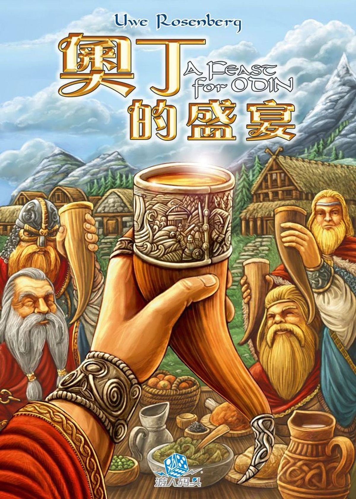
本页整理自《奥丁的盛宴》（A Feast for Odin）游人码头发行的繁体中文版规则书及其《规则附录》（Uwe Rosenberg 设计，2016 年出版发行，中文翻译 周子翔、陳銘舟、賈晨），共 41 页逐页转录，按站点惯例由繁体转为简体录入，并在对应章节嵌入原书扫描页供对照。内容涵盖配件清单、游戏设置、回合 12 阶段（增加维京人／收获／翻转探索版图／抽武器卡／行动／决定起始玩家／收入／动物繁殖／宴会／奖励／山脉板块／取回维京人）、任意行动、各类行动格详解、职业卡牌效果分类、游戏结束计分、单人游戏，以及规则附录（190 张职业卡牌索引、资源、物资、版图和板块）。规则内容归版权方所有，转录仅供个人学习查阅。
整理说明：原文为繁体中文，转录时转为简体；原书个别排印瑕疵（如"每私人"式的误植、句读混乱处）按原书位置照录并以〔〕注明。第 27-37 页为 190 张职业卡牌的逐条索引表格，为密集小字，完整内容请直接放大查阅对应内嵌扫描图，本页仅收录其体例说明与首尾条目示例。
背景介绍
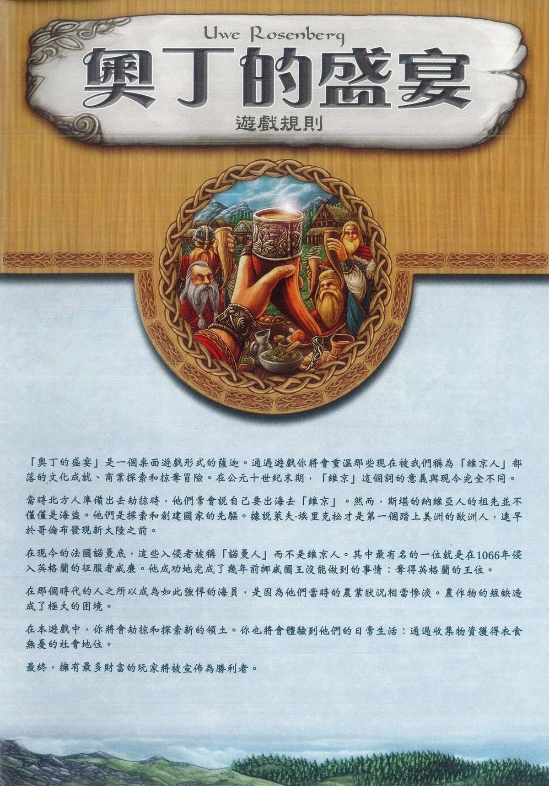
「奥丁的盛宴」是一个桌面游戏形式的萨迦。通过游戏你将会重温那些现在被我们称为「维京人」部落的文化成就、商业探索和掠夺冒险。在公元十世纪末期，「维京」这个词的意思与现今完全不同。
当时北方人准备出去劫掠时，他们常会说自己要出海去「维京」。然而，斯堪的纳维亚人的祖先并不仅仅是海盗。他们是探索和创建国家的先驱。据说莱夫·埃里克松才是第一个踏上美洲的欧洲人，远早于哥伦布发现新大陆之前。
在现今的法国诺曼底，这些入侵者被称「诺曼人」而不是维京人。其中最有名的一位就是在 1066 年侵入英格兰的征服者威廉。他成功地完成了几年前挪威王没能做到的事情：夺得英格兰的王位。
在那个时代的人之所以成为如此强悍的海员，是因为他们当时的农业状况相当惨淡。农作物的短缺造成了极大的困境。
在本游戏中，你将会劫掠和探索新的领土。你也将会体验到他们的日常生活：通过收集物资获得衣食无忧的社会地位。最终，拥有最多财富的玩家将被宣布为胜利者。
游戏配件
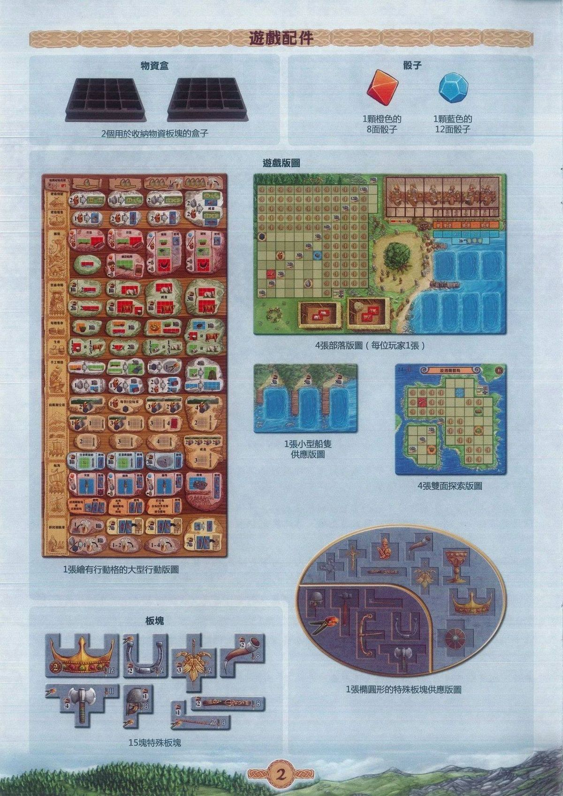
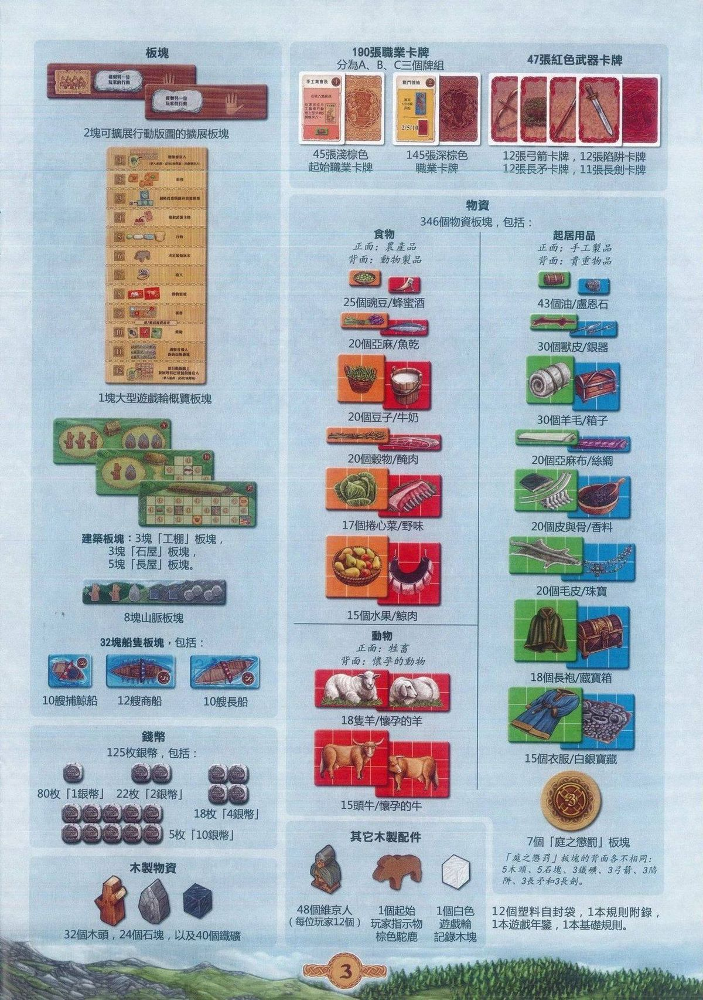
- 物资盒：2 个用于收纳物资板块的盒子
- 骰子：1 颗橙色的 8 面骰子、1 颗蓝色的 12 面骰子
- 游戏版图：1 张绘有行动格的大型行动版图；4 张部落版图（每位玩家 1 张）；1 张小型船只供应版图；4 张双面探索版图；1 张椭圆形的特殊板块供应版图
- 板块：15 块特殊板块；2 块可扩展行动版图的扩展板块；1 块大型游戏概览板块
- 建筑板块：3 块「工棚」板块，3 块「石屋」板块，5 块「长屋」板块
- 8 块山脉板块
- 32 块船只板块：10 艘捕鲸船、12 艘商船、10 艘长船
- 钱币：125 枚银币（80 枚「1银币」、22 枚「2银币」、18 枚「5银币」、5 枚「10银币」）
- 木制物资：32 个木头，24 个石块，以及 40 个铁矿
- 190 张职业卡牌（分为 A、B、C 三个牌组：45 张浅棕色起始职业卡牌、145 张深棕色职业卡牌）；47 张红色武器卡牌（12 弓箭、12 陷阱、12 长矛、11 长剑）
- 物资：346 个物资板块，包括——
- 食物（正面农产品／背面动物制品）：25 豌豆/蜂蜜酒、20 亚麻/鱼干、20 豆子/牛奶、20 谷物/腌肉、17 卷心菜/野味、15 水果/鲸肉
- 起居用品（正面手工制品／背面贵重物品）：43 油/卢恩石、30 兽皮/银器、30 羊毛/箱子、20 亚麻布/丝绸、20 皮与骨/香料、20 毛皮/珠宝、18 长袍/藏宝箱、15 衣服/白银宝藏
- 动物（正面牲畜／背面怀孕的动物）：18 羊/怀孕的羊、15 牛/怀孕的牛
- 其它木制配件：48 个维京人（每位玩家 12 个）、1 个起始玩家指示物（棕色驼鹿）、1 个白色游戏编号记录木块
- 7 个「庭之惩罚」板块（背面各不相同：5木头、5石块、3铁矿、3弓箭、3陷阱、3长矛和3长剑）
- 12 个塑料自封袋，1 本规则附录，1 本游戏年鉴，1 本基础规则
在你首次游戏前 · 游戏设置（1/3）
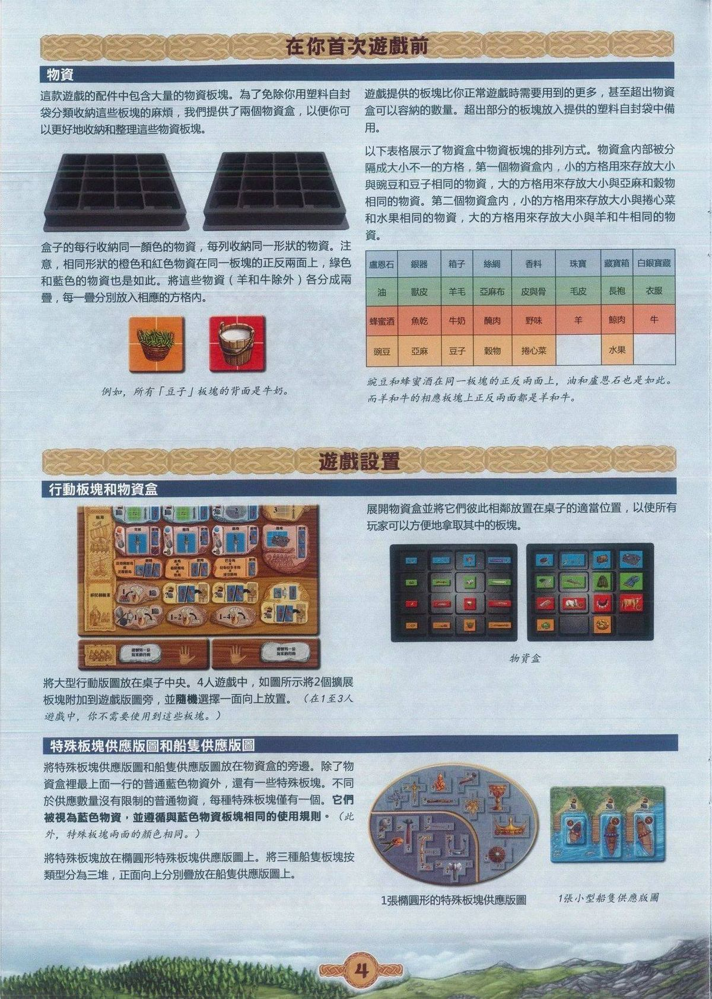
物资
这款游戏的配件中包含大量的物资板块。为了避免你用塑料自封袋分类收纳这些板块的麻烦，我们提供了两个物资盒，以便你可以更好地收纳和整理这些物资板块。盒子的每行收纳同一颜色的物资，每列收纳同一形状的物资。注意，相同形状的橙色和红色物资在同一板块的正反两面上，绿色和蓝色的物资也是如此。将蓝色物资（羊和牛除外）各分成两叠，每一叠分别放入相应的方格内。
游戏提供的板块比你正常游戏时需要用到的更多，甚至超出物资盒可以容纳的数量。超出部分的板块放入提供的塑料自封袋中备用。
行动板块和物资盒
将大型行动版图放在桌子中央。4 人游戏中，如图所示将 2 块扩展板块附加到游戏版图旁，并且随机选择一面朝上放置。（在 1 至 3 人游戏中，你不需要使用这些板块。）展开物资盒并将它们彼此相邻放置在桌子的适当位置，以使所有玩家可以方便地拿取其中的板块。
特殊板块供应版图和船只供应版图
将特殊板块供应版图和船只供应版图放在物资盒的旁边。除了物资盒里最上面一行的普通蓝色物资外，还有一些特殊板块。不同于供应数量没有限制的普通物资，每个特殊板块仅有一个。它们被视为蓝色物资，并遵循与蓝色资源板块相同的使用规则。（此外，特殊板块两面的颜色相同。）将特殊板块放在椭圆形特殊板块供应版图上。将三种船只板块按类型分为三堆，正面朝上分别摆放在船只供应版图上。
游戏设置（2/3）：职业卡牌 · 部落版图 · 维京人
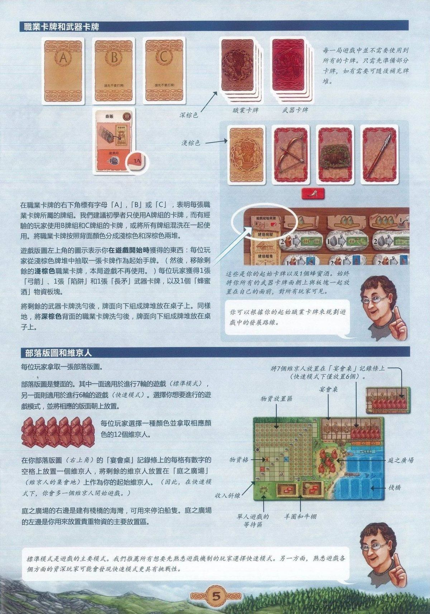
职业卡牌和武器卡牌
每一局游戏中并不需要使用到所有的卡牌。只需先准备划分卡牌，如有需要可后续补充牌堆。在职业卡牌的右下角带有字母「A」、「B」或「C」，表明该职业卡牌属于哪个牌组。我们建议初学者只使用 A 牌组的卡牌，而有经验的玩家使用 B 牌组和 C 牌组的卡牌，或将所有牌组混洗在一起使用。将职业卡牌按照背面颜色分成浅棕色和深棕色两堆。将剩余的武器卡牌洗匀后，牌面向下组成牌堆放在桌子上。同样地，将浅棕色背面的职业卡牌洗匀后，牌面向下组成牌堆放在桌子上。
游戏版图左上角的图示表示你在游戏开始时获得的东西：每位玩家从浅色牌堆中抽取一张卡牌作为起始手牌。（然后，剩余的浅色职业卡牌，本局游戏不再使用。）每位玩家获得 1 张「弓箭」、1 张「陷阱」和 1 张「长矛」武器卡牌，以及 1 个「蜂蜜酒」。
部落版图和维京人
每位玩家拿取一张部落版图。部落版图是双面的：其中一面适用于进行 7 轮的游戏（标准模式），另一面则适用于进行 6 轮的游戏（快速模式）。选择你想要进行的游戏模式，并将相应的面朝上放置。每位玩家选择一种颜色并拿取相应颜色的 12 个维京人。
在你部落版图（右上角）的「宴会桌」记录线上的每格有数字的空格上放置一个维京人，将剩余的维京人放置在「庭之广场」（维京人的集会地）上作为你的起始维京人。（因此，在快速模式下，你会多一个维京人开始游戏。）庭之广场的右边是建有栈桥的海湾，可用来停泊船只。庭之广场的左边是你用来放置贵重物资的主要放置区。
游戏设置（3/3）· 游戏概述
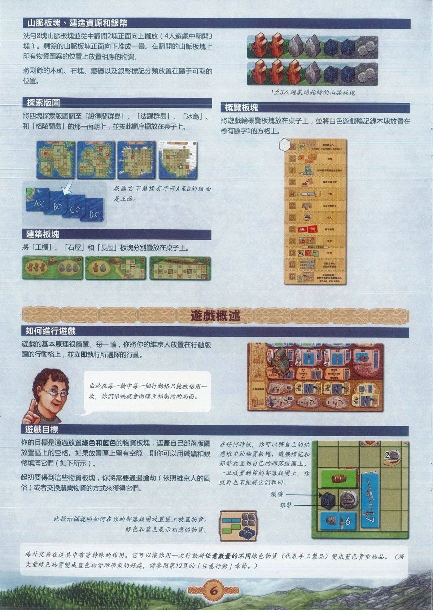
山脉板块、建造资源和银币
洗匀 8 块山脉板块并从中翻开 2 块正面向上摆放（4 人游戏中翻开 3 块）。剩余的山脉板块正面向下堆成一叠。在翻开的山脉板块上印有物资图案的位置上放置相应的物资。将剩余的木头、石块、铁矿以及银币标记分类放置在随手可取的位置。
探索版图
将四块探索版图翻至「设得兰群岛」、「法罗群岛」、「冰岛」、和「格陵兰岛」的那一面朝上，并按此顺序摆放在桌子上。（版图右下角标有字母 A 至 D 的版面是正面。）
建筑板块
将「工棚」、「石屋」和「长屋」板块分别叠放在桌子上。
概览板块
将游戏轮概览板块放在桌子上，并将白色游戏轮记录木块放置在标有数字 1 的方格上。
游戏概述：如何进行游戏 · 游戏目标
游戏的基本原理很简单。每一轮，你将你的维京人放置在行动版图的行动格上，并立即执行所选择的行动。你的目标是通过放置绿色和蓝色的物资板块，遮盖自己部落版图放置区上的空格。如果放置区上留有空隙，则你可以用铁矿和银币填满它们。起初要得到这些物资板块，你将需要通过抢劫（依照维京人的风俗）或者交换农业物资的方式来获得它们。在任何时候，你可以将你的供应区中的物资板块、铁矿标记和银币放置到自己的部落版图上。一旦放置到你的部落版图上，你就再也不能将它们取回。
收入 · 奖励 · 游戏得分
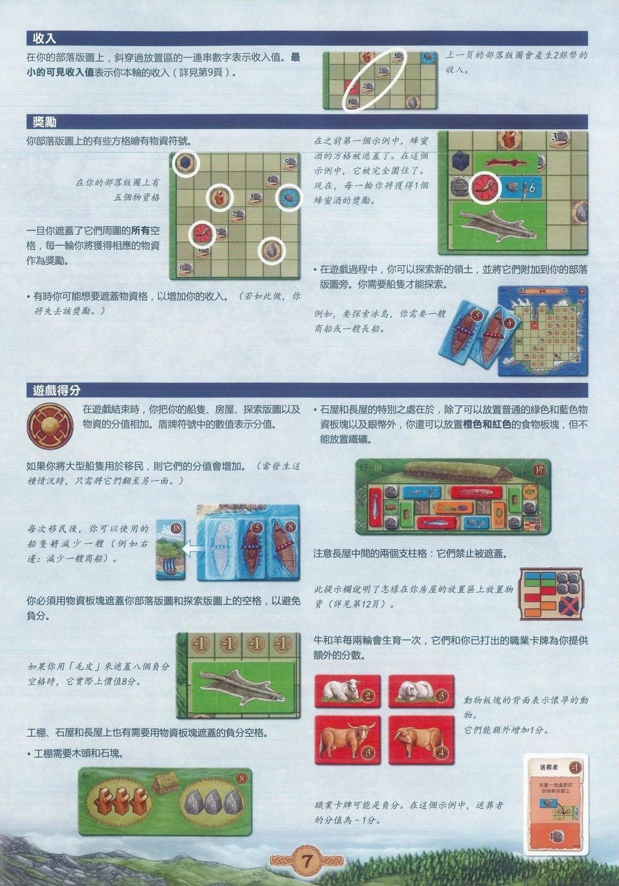
收入：在你的部落版图上，斜穿过放置区的一连串数字表示收入值。最小的可见收入值表示你本轮的收入（详见第 9 页）。
奖励：你部落版图上的有些方格绘有物资符号。一旦你遮盖了它们周围的所有空格，每一轮你将获得相应的物资作为奖励。有时你可能想要遮盖物资格，以增加你的收入。（若如此做，你将失去该奖励。）在游戏过程中，你可以探索新的领土，并将它们附加到你的部落版图旁。你需要船只才能探索。例如，要探索冰岛，你需要一艘商船或一艘长船。
游戏得分：在游戏结束时，你把你的船只、房屋、探索版图以及物资的分值相加。盾牌符号中的数值表示分值。如果你将大型船隻用于移民，则它们的分值会增加（只需将它们翻至另一面）。你必须用物资板块遮盖你部落版图和探索版图上的空格，以避免负分。工棚、石屋和长屋上也有需要用物资板块遮盖的负分空格：工棚需要木头和石块；石屋和长屋的特别之处在于，除了可以放置普通的绿色和蓝色物资板块以及银币外，你还可以放置橙色和红色的食物板块，但不能放置铁矿。注意长屋中间的两个支柱格：它们禁止被遮盖。牛和羊每两轮会生育一次，它们和你已打出的职业卡牌为你提供额外的分数。动物板块的背面表示怀孕的动物，它们能额外增加 1 分。职业卡牌可能是负分。
游戏流程：阶段 1-3
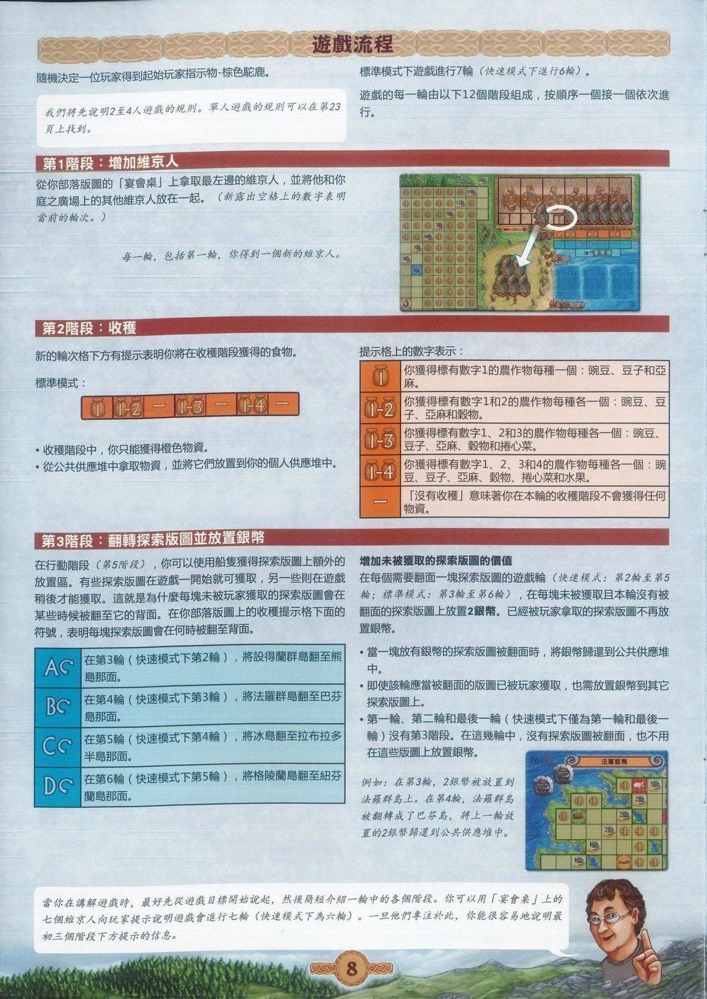
随机决定一位玩家得到起始玩家指示物：棕色驼鹿。标准模式下游戏进行 7 轮（快速模式下进行 6 轮）。游戏的每一轮由以下 12 个阶段组成，按顺序一个接一个依次进行。
第 1 阶段：增加维京人——从你部落版图的「宴会桌」上拿取最左边的维京人，并将他和你庭之广场上的其他维京人放在一起。（新腾出空格上的数字表明获得的顺序。）每一轮，包括第一轮，你得到一个新的维京人。
第 2 阶段：收获——新的轮次格下方有提示表明你将在收获阶段获得的食物。标准模式：1｜1-2｜—｜1-3｜—｜1-4｜—。收获阶段中，你只能获得橙色物资。从公共供应堆中拿取物资，并将它们放置到你的个人供应堆中。提示格上的数字表示：1＝获得标有数字 1 的农作物每种一个（豌豆、豆子和亚麻）；1-2＝数字 1 和 2 的农作物每种各一个（豌豆、豆子、亚麻和谷物）；1-3＝数字 1、2 和 3 的每种各一个（豌豆、豆子、亚麻、谷物和卷心菜）；1-4＝数字 1、2、3 和 4 的每种各一个（豌豆、豆子、亚麻、谷物、卷心菜和水果）；—＝「没有收获」意味着你在本轮的收获阶段不会获得任何物资。
第 3 阶段：翻转探索版图并放置银币——在行动阶段（第 5 阶段），你可以使用船只获得探索版图上额外的放置区。有些探索版图在游戏一开始就可获取，另一些则在游戏后续才能获取。这就是为什么每块未被玩家获取的探索版图会在某些时候被翻至它的背面。在你部落版图的收入提示下方的符号，表明每块探索版图会在何时被翻至背面：AC＝第 3 轮（快速第 2 轮）将设得兰群岛翻面；BC＝第 4 轮（快速第 3 轮）将法罗群岛翻面；CC＝第 5 轮（快速第 4 轮）将冰岛翻至拉布拉多背面；DC＝第 6 轮（快速第 5 轮）将格陵兰岛翻至纽芬兰背面。
增加未被获取的探索版图的价值：在每个需要翻面一块探索版图的游戏轮（快速模式：第 2 至第 5 轮；标准模式：第 3 至第 6 轮），在每块未被获取且本轮没有被翻面的探索版图上放置 2 银币。已经被玩家拿取的探索版图不再放置银币。当一堆放有银币的探索版图被翻面时，将银币转递到公共供应堆中。即使该面应该被翻面的版图已被玩家获取，也需放置银币到其它探索版图上。第一轮、第二轮和最后一轮（快速模式下仅为第一轮和最后一轮）没有第 3 阶段。
游戏流程：阶段 4-7
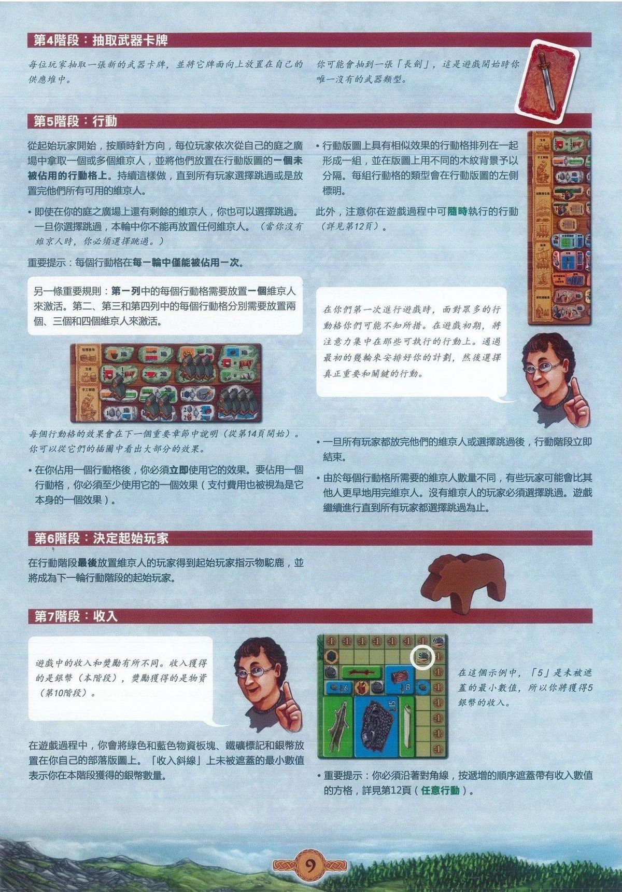
第 4 阶段：抽取武器卡牌——每位玩家抽取一张新的武器卡牌，并将它牌面向上放在自己的供应堆中。你可能会抽到一张「长剑」，这是游戏开始时你唯一没有的武器类型。
第 5 阶段：行动——从起始玩家开始，按顺时针方向，每位玩家依次从自己的庭之广场中拿取一个或多个维京人，并将他们放置在行动版图的一个未被使用的行动格上。持续这样做，直到所有玩家选择跳过或是放置完他们所有可用的维京人。即使在你的庭之广场上还有剩余的维京人，你也可以选择跳过。一旦你选择跳过，本轮中你不能再放置任何维京人。（你没有维京人时，你必须选择跳过。）重要提示：每个行动格在每一轮中仅能被使用一次。另一种重要规则：第一列中的每个行动格需要放置一个维京人来激活，第二、第三和第四列中的每个行动格分别需要放置两个、三个和四个维京人来激活。
在你占用一个行动格后，你必须立即使用它的效果——要占用一个行动格，你必须至少使用它的一个效果（支付费用也被视为是它本身的一个效果）。行动版图上具有相似效果的行动格排列在一起形成一组，并在版图上用不同的木纹背景予以分隔。每组行动格的类型会在行动版图的左侧说明。此外，注意你在游戏过程中可单独执行的行动（详见第 12 页）。一旦所有玩家都放完他们的维京人或选择跳过后，行动阶段立即结束。由于每个行动格所需要的维京人数量不同，有些玩家可能会比其他人更早地用完维京人。没有维京人的玩家必须选择跳过。游戏继续进行直到所有玩家都选择跳过为止。
第 6 阶段：决定起始玩家——在行动阶段最后放置维京人的玩家得到起始玩家指示物（驼鹿），并将成为下一行动阶段的起始玩家。
第 7 阶段：收入——在游戏过程中，你会将绿色和蓝色物资板块、铁矿标记和银币放置在你自己的部落版图上。「收入斜线」上未被遮盖的最小数值表示你在本阶段获得的银币数量。在这个示例中，「5」是未被遮盖的最小数值，所以你将获得 5 银币的收入。重要提示：你必须沿着对角线，按递增的顺序遮盖带有收入数值的方格，将完整 12 格（任意行动）。
游戏流程：阶段 8-9
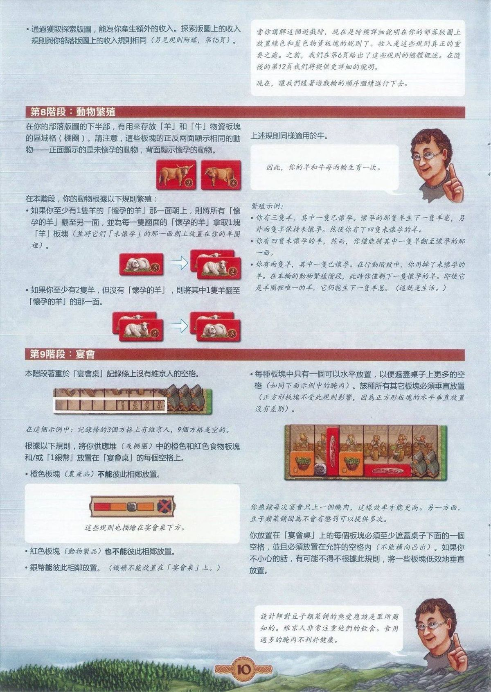
第 8 阶段：动物繁殖——在你的部落版图的下半部，有用来存放「羊」和「牛」物资板块的区域格（栅栏）。请注意，这些板块的正反两面显示相同的动物——正面显示的是未怀孕的动物，背面显示怀孕的动物。在本阶段，你的动物根据以下规则繁殖：
- 如果你至少有 1 只羊的「怀孕的羊」那一面朝上，则将所有「怀孕的羊」翻至另一面，并为每一只翻面的「怀孕的羊」拿取 1 块「羊」板块（并将它们「未怀孕」的那一面朝上放置在你的羊圈里）。
- 如果你至少有 2 只羊，但没有「怀孕的羊」，则将其中 1 只羊翻至「怀孕的羊」的那一面。
上述规则同样适用于牛。因此，你的羊和牛每两轮生育一次。繁殖示例：你有三只羊，其中一只已怀孕。怀孕的那只羊生下一只羊崽，另外两只羊保持未怀孕。然后你有了四只未怀孕的羊。你有四只未怀孕的羊，然而，你仅能将其中一只羊翻至怀孕的那一面。你有两只羊，其中一只已怀孕。在行动阶段中，你用掉了未怀孕的羊。在本轮的动物繁殖阶段，此时你仅剩下一只怀孕的羊。即便它是羊圈里唯一的羊，它仍能生下一只羊崽。（这就是生活。）
第 9 阶段：宴会——本阶段着重于「宴会桌」记录线上没有维京人的空格。根据以下规则，将你供应堆（或栅栏）中的橙色和红色食物板块和/或「1银币」放置在「宴会桌」的每个空格上：
- 橙色板块（农产品）不能彼此相邻放置。
- 红色板块（动物制品）也不能彼此相邻放置。
- 银币能彼此相邻放置。（铁矿不能放置在「宴会桌」上。）
- 每种板块中只有一个可以水平放置，以便遮盖桌子上更多的空格（如下面示例中的腌肉）。该种所有其它板块必须垂直放置（正方形板块不受此规则影响，因为正方形板块的水平垂直放置没有差别）。
你应该每次宴会只上一个鲸肉，这样效率才能更高。另一方面，豆子类菜肴因为不会有惩罚可以提供多次。你放置在「宴会桌」上的每个板块必须至少遮盖桌子下面的一个空格，并且必须放置在允许的空格内（不能横向凸出）。如果你不小心的话，有可能不得不根据此规则，将一些板块低效地垂直放置。
游戏流程：庭之惩罚 · 阶段 10-12
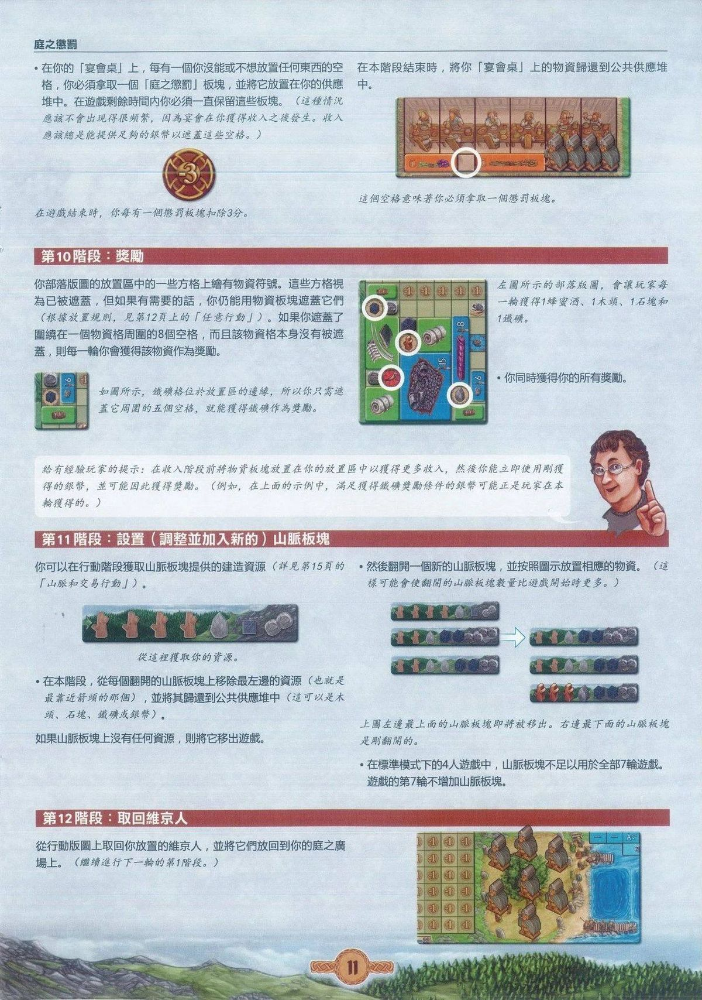
庭之惩罚——在你的「宴会桌」上，每有一个你没能或不想放置任何东西的空格，你必须拿取一个「庭之惩罚」板块，并将它放在你的供应堆中。在游戏剩余时间内你必须一直保留这些板块。（这种情况应该不会出现得很频繁，因为宴会在你获得收入之后发生。收入应该总是能提供足够的银币以遮盖这些空格。）游戏结束时，你每有一个惩罚板块扣除 3 分。在本阶段结束时，将你「宴会桌」上的物资归还到公共供应堆中。
第 10 阶段：奖励——你部落版图的放置区中的一些方格上绘有物资符号。这些方格视为已被遮盖，但如果有需要的话，你仍能用物资板块遮盖它们（根据放置规则，见第 12 页上的「任意行动」）。如果你遮盖了围绕在一个物资格周围的 8 个空格，而且该物资格本身没有被遮盖，则每一轮你会获得该物资作为奖励。如图所示，铁矿格位于放置区的边缘，所以你只需遮盖它周围的五个空格，就能获得铁矿作为奖励。你同时获得你的所有奖励。
第 11 阶段：设置（调整并加入新的）山脉板块——你可以在行动阶段获取山脉板块提供的建造资源（详见第 15 页的「山脉和交易行动」）。在本阶段，从每个翻开的山脉板块上移除最左边的资源（也就是最靠近箭头的那个），并将其归还到公共供应堆中（这可以是木头、石块、铁矿或银币）。如果山脉板块上没有任何资源，则将它移出游戏。然后翻开一个新的山脉板块，并按照图示放置相应的物资。（这样可能会使翻开的山脉板块数量比游戏开始时更多。）在标准模式下的 4 人游戏中，山脉板块不足以用于全部 7 轮游戏。游戏的第 7 轮不增加山脉板块。
第 12 阶段：取回维京人——从行动版图上取回你放置的维京人，并将它们放回到你的庭之广场上。（继续进行下一轮的第 1 阶段。）
任意行动：在部落版图上放置物资
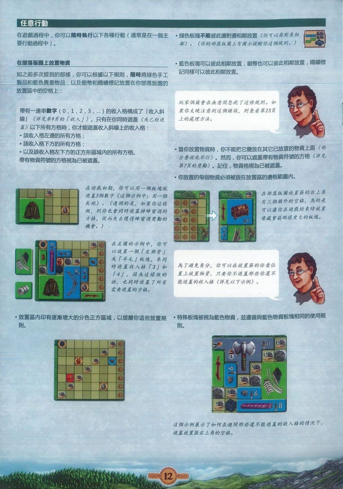
在游戏过程中，你可以随时执行以下各种行动（通常是在一个主要行动过程中）。
在部落版图上放置物资——如之前多次提到的那样，你可以根据以下规则，随时将绿色手工制品和蓝色贵重物品，以及银币和铁矿标记放置在你部落版图的放置区中的空格上：带有一连串数字（0，1，2，3，…）的收入格构成了「收入斜线」（详见第 9 页的「收入」）。只有在你同时遮盖（或已经遮盖）以下所有方格时，你才能遮盖收入斜线上的收入格：该收入格左边的所有方格；该收入格下方的所有方格；以及该收入格左下方的正方形区域内的所有方格。带有物资符号的方格视为已被遮盖。
- 绿色板块不能彼此边对边相邻放置（但可以角对角相邻）。（你的部落版图上有图示提醒你这个规则。）
- 蓝色板块可以彼此相邻放置，银币也可以彼此相邻放置，铁矿标记同样可以彼此相邻放置。
- 当你放置物资时，你不能把它叠放在其它已放置的物资上面（部分叠放也不行）。然而，你可以遮盖带有物资符号的方格（详见第 7 页的奖励）。记住，物资格视为已被遮盖。
- 你放置的每个物资必须被放在放置区的边框范围内。
- 放置区内印有逐渐增大的分色正方型区域，以提醒你这些放置规则。
- 特殊板块被视为蓝色物资，并遵循与蓝色物资板块相同的使用规则。
在部落版图放置区的右上角有三个额外的空格，为的是可以让你在游戏结束时放置像藏宝箱那样更大的板块。为了避免负分，你可以在放置区的任意位置上放置物资，只要你不遮盖那些你还不能遮盖的收入格（详见示例）。
任意行动（续）：探索版图 · 房屋 · 船只 · 银币
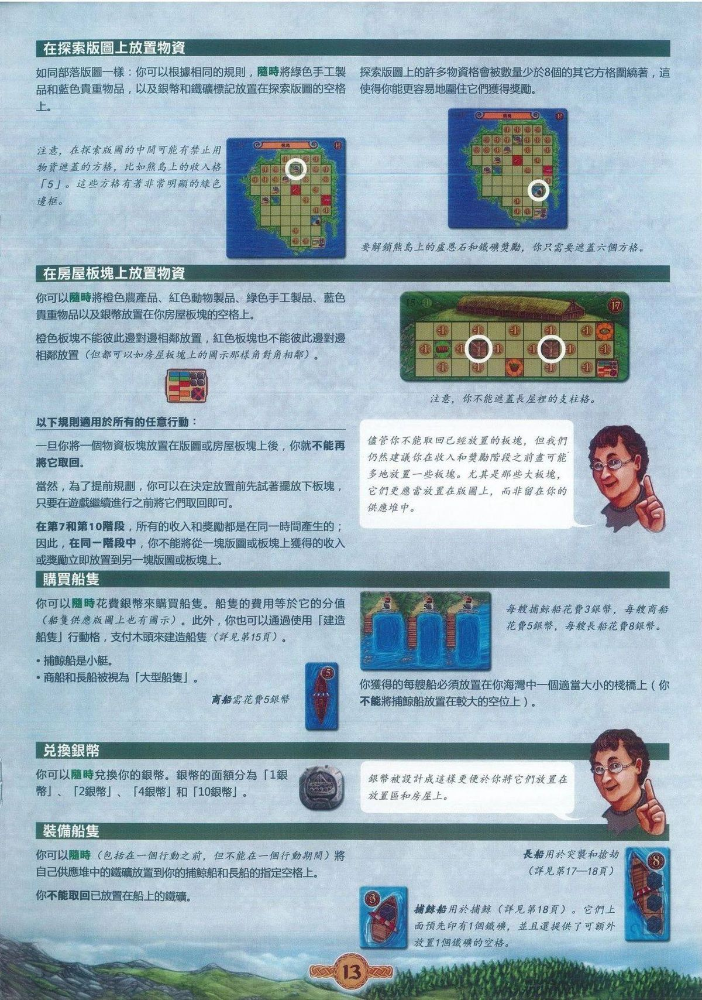
在探索版图上放置物资——如同部落版图一样，你可以根据相同的规则，随时将绿色手工制品和蓝色贵重物品，以及银币和铁矿标记放置在探索版图的空格上。注意，在探索版图的中间可能有禁止用物资遮盖的方格，比如熊岛上的收入格「5」。这些方格有着非常明显的绿色边框。探索版图上的许多物资格会被数量少于 8 个的其它方格围绕着，这使得你能更容易地围住它们获得奖励。要解锁熊岛上的卢恩石和铁矿奖励，你只需要遮盖六个方格。
在房屋板块上放置物资——你可以随时将橙色农产品、红色动物制品、绿色手工制品、蓝色贵重物品以及银币放置在你房屋板块的空格上。橙色板块不能彼此边对边相邻放置，红色板块也不能被边对边相邻放置（但它可以和房屋板块上的图示条角对角相邻）。注意，你不能遮盖长屋里的支柱格。
以下规则适用于所有的「任意行动」：一旦你将一个物资板块放置在版图或房屋板块上后，你就不能再将它取回。当然，为了提前规划，你可以在决定放置前先试着摆放下板块，只要在游戏继续进行之前将它们取回即可。在第 7 和第 10 阶段，所有的收入和奖励都是在同一时间产生的；因此，在同一阶段中，你不能将从一块版图或板块上获得的收入或奖励立即放置到另一块版图或板块上。
购买船只——你可以随时花费银币来购买船只。船只的费用等于它的分值（船只供应版图上也有图示）。此外，你也可以通过使用「建造船只」行动格，支付木头建造船只（详见第 15 页）。捕鲸船是小艇；商船和长船被视为「大型船只」。每艘捕鲸船花费 3 银币，每艘商船花费 5 银币，每艘长船花费 8 银币。你获得的每艘船必须放置在你海湾中一个适当大小的栈桥上（你不能将捕鲸船放置在较大的空位上）。
兑换银币——你可以随时兑换你的银币。银币的面额分为「1银币」、「2银币」、「4银币」和「10银币」〔配件页作「5银币」，原书两处不一致〕。
装备船只——你可以随时（包括在一个行动之前，但不能在一个行动期间）将自己供应堆中的铁矿放置到你的捕鲸船和长船的指定空格上。你不能取回已放置在船上的铁矿。长船用于突袭和掠夺（详见第 17—18 页）。捕鲸船用于捕鲸（详见第 18 页）。它们上面预先印有 1 个铁矿，并且还提供了可额外放置 1 个铁矿的空格。
职业卡牌 · 放弃 · 行动格与生产格
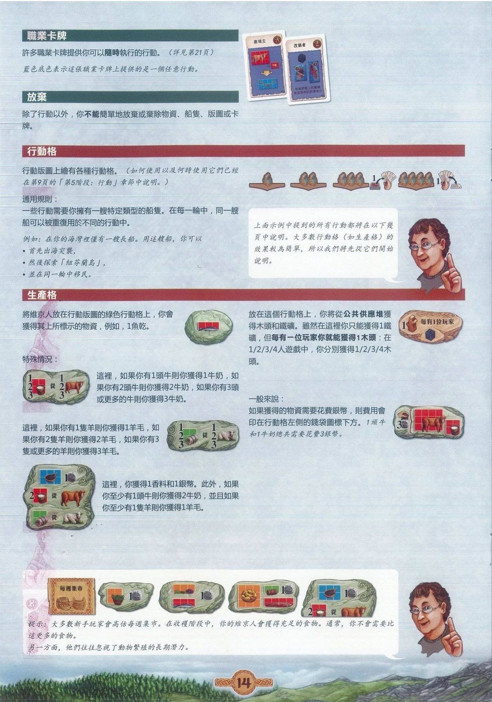
职业卡牌——许多职业卡牌提供你可以随时执行的行动。（详见第 21 页）蓝色底色表示这张职业卡牌上提供的是一个任意行动。
放弃——除了行动以外，你不能简单地放弃或弃除物资、船只、版图或卡牌。
行动格——行动版图上绘有各种行动格。（如何使用以及何时使用它们已经在第 9 页的「第 5 阶段：行动」章节中说明。）通用规则：一些行动需要你拥有一艘特定类型的船只。在每一轮中，同一艘船可以被重复用于不同的行动中。例如：在你的海湾里仅有一艘长船。用这艘船，你可以：首先出海突袭，然后探索「纽芬兰岛」，并在同一轮中移民。
生产格——将维京人放在行动版图的绿色行动格上，你会获得其上所标示的物资，例如，1 鱼干。特殊情况：这里，如果你有 1 头牛则你获得 1 牛奶，如果你有 2 头牛则你获得 2 牛奶，如果你有 3 头或更多的牛则你获得 3 牛奶。这里，如果你有 1 只羊则你获得 1 羊毛，如果你有 2 只羊则你获得 2 羊毛，如果你有 3 只或更多的羊则你获得 3 羊毛。放在这个行动格上，你将从公共供应堆获得木头和铁矿。虽然在这里你只能获得 1 铁矿，但每有一位玩家你就能获得 1 木头：在 1/2/3/4 人游戏中，你分别获得 1/2/3/4 木头。一般来说：如果获得的物资需要花费银币，则费用会印在行动格左侧的钱袋图标下方。1 头牛和 1 牛奶总共需要花费 3 银币。这里，你获得 1 香料和 1 银币。此外，如果你至少有 1 头牛则你获得 2 牛奶，并且如果你至少有 1 只羊则你获得 1 羊毛。
（每周集市提示：大多数新手玩家会高估每周集市。在收获阶段中，你的维京人会获得充足的食物。通常，你不会需要比这更多的食物。另一方面，他们往往忽视了动物繁殖的长期潜力。）
交易格 · 山脉和交易行动
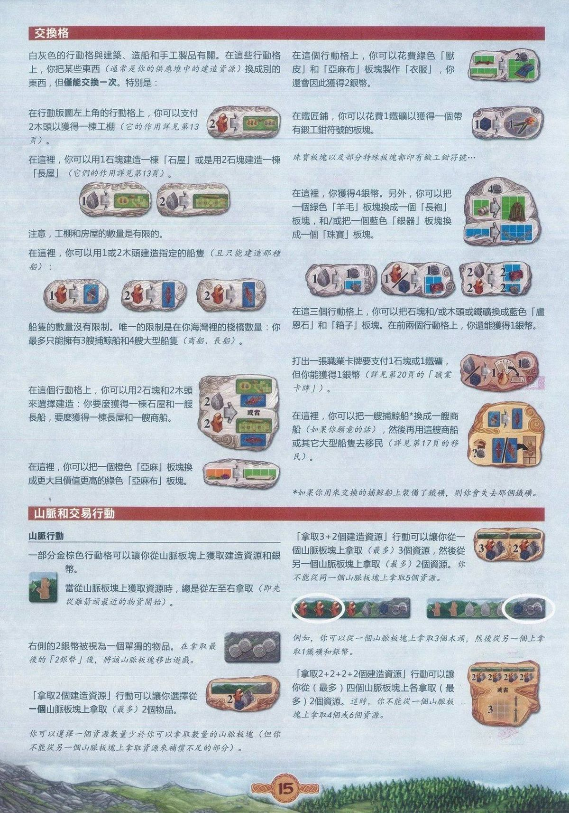
交易格——白灰色的行动格与建筑、造船和手工制品有关。在这些行动格上，你把某些东西（通常是你的供应堆中的建造资源）换成别的东西，但仅能交换一次。特别是：
- 在行动版图左上角的行动格上，你可以支付 2 木头以获得 1 块工棚（它的作用详见第 13 页）。
- 在这里，你可以用 1 石块建造一栋「石屋」或是用 2 石块建造一栋「长屋」（它们的作用详见第 13 页）。注意，工棚和房屋的数量是有限的。
- 在这里，你可以用 1 或 2 木头建造指定的船只（且只能建造那种船）。船只的数量没有限制。唯一的限制是在你海湾里的栈桥数量：你最多只能拥有 3 艘捕鲸船和 4 艘大型船只（商船、长船）。
- 在这个行动格上，你可以用 2 石块和 2 木头来选择建造：你想要获得一栋石屋和一艘长船，或是获得一栋长屋和一艘商船。
- 在这里，你可以把一个橙色「亚麻」板块换成更大且价值更高的绿色「亚麻布」板块。
- 在这个行动格上，你可以花费绿色「兽皮」和「亚麻布」板块制作「衣服」，你还将因此获得 2 银币。
- 在铁匠铺，你可以花费 1 铁矿以获得一个带有该工艺符号的板块。珠宝板块以及部分特殊板块都印有该工艺符号……
- 在这里，你获得 4 银币。另外，你可以把一个绿色「羊毛」板块换成一个「长袍」板块，和/或把一个蓝色「银器」板块换成一个「珠宝」板块。
- 在这三个行动格上，你可以把石块和/或木头或铁矿换成蓝色「卢恩石」和「箱子」板块。在前两个行动格上，你还能获得 1 银币。
- 打出一张职业卡牌要支付 1 石块或 1 铁矿，但你能获得 1 银币（详见第 20 页的「职业卡牌」）。
- 在这里，你可以把一艘捕鲸船*换成一艘商船（如果你愿意的话），然后再用这艘商船或其它大型船只去移民（详见第 17 页的移民）。*如果你用来交换的捕鲸船上装备了铁矿，则你会失去那个铁矿。
山脉行动——一部分金色行动格可以让你从山脉板块上获取建造资源和银币。当从山脉板块上获取资源时，总是从左至右拿取（即最靠近箭头最近的物资开始）。右侧的 2 银币被视为一个单独的物品。在拿取最左边的「2银币」后，将该山脉板块移出游戏。
- 「拿取 2 个建造资源」行动可以让你选择从一个山脉板块上拿取（最多）2 个物品。你可以选择一个资源数量少于你可以拿取数量的山脉板块（但你不能在另一个山脉板块上拿取资源来补偿不足的部分）。
- 「拿取 3+2 个建造资源」行动可以让你从一个山脉板块上拿取（最多）3 个资源，然后从另一个山脉板块上拿取（最多）2 个资源。你不能从同一个山脉板块上拿取 5 个资源。例如：你可以从一个山脉板块上拿取 3 个木头，然后从另一个山上拿取 1 铁矿和银币。
- 「拿取 2+2+2+2 个建造资源」行动可以让你从（最多）四个山脉板块上各拿取（最多）2 个资源。这时，你不能从一个山脉板块上拿取 4 个或 6 个资源。
交易行动 · 商船行动格
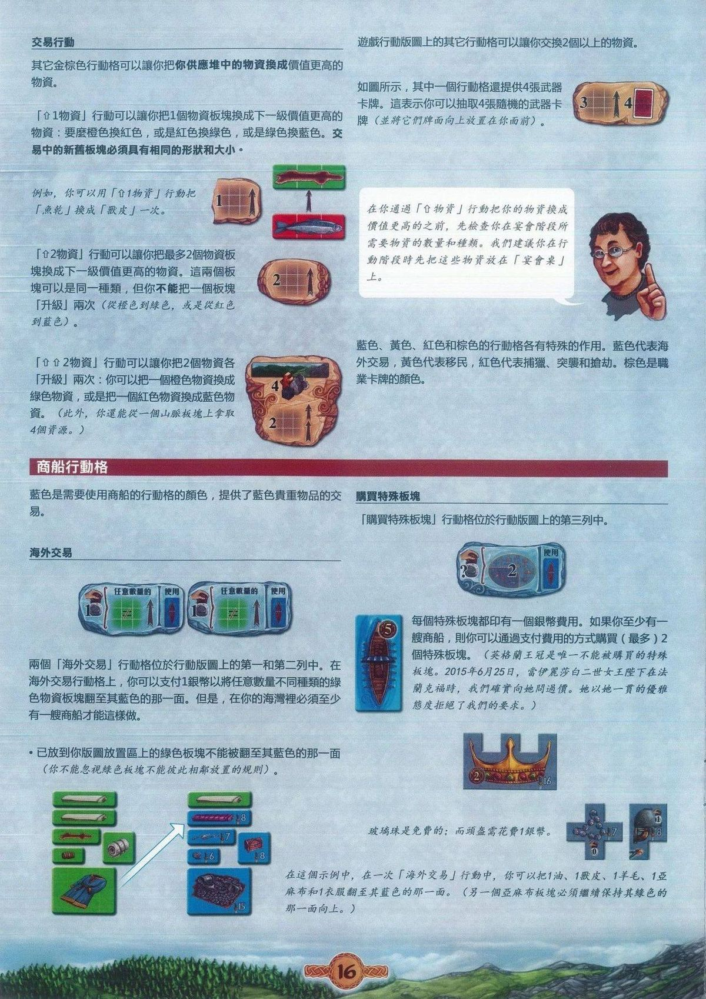
交易行动——其它金棕色行动格可以让你把你供应堆中的物资换成价值更高的物资。「↑1物资」行动可以让你把 1 个物资板块换成下一级价值更高的物资：要么橙色换红色，或是红色换绿色，或是绿色换蓝色。交易中的新旧板块必须具有相同的形状和大小。例如，你可以用「↑1物资」行动把「鱼干」换成「兽皮」一次。
「↑2物资」行动可以让你把最多 2 个物资板块换成下一级价值更高的物资。这两个板块可以是同一种类，但你不能把一个板块「升级」两次（从橙色到绿色，或是从红色到蓝色）。「↑↑2物资」行动可以让你把 2 个物资各「升级」两次：你可以把一个橙色物资换成绿色物资，或是把一个红色物资换成蓝色物资。（此外，你还能从一个山脉板块上拿取 4 个资源。）游戏行动版图上的其它行动格可以让你交换 2 个以上的物资。如图所示，其中一个行动格还提供 4 张武器卡牌。这表示你可以抽取 4 张随机的武器卡牌（并将它们牌面向上放置在你面前）。
蓝色、黄色、红色和棕色的行动格各有特殊的作用。蓝色代表海外交易，黄色代表移民，红色代表捕猎、突袭和抢劫。棕色是职业卡牌的颜色。
商船行动格——蓝色是需要使用商船的行动格的颜色，提供了蓝色贵重物品的交易。
海外交易——两个「海外交易」行动格位于行动版图上的第一和第二列中。在海外交易行动格上，你可以支付 1 银币以将任意数量不同种类的绿色物资板块翻至其蓝色的那一面。但是，在你的海湾里必须至少有一艘商船才能这样做。已放到你版图放置区上的绿色板块不能被翻至其蓝色的那一面（你不能忽视绿色板块不能边对边相邻放置的规则）。
购买特殊板块——「购买特殊板块」行动格位于行动版图上的第三列中。每个特殊板块都印有一个银币费用。如果你至少有一艘商船，则你可以通过支付费用的方式购买（最多）2 个特殊板块。（英格兰王冠是唯一不能被购买的特殊板块。2015 年 6 月 25 日，当伊丽莎白二世女王登上法罗群岛时，我们确实向她开过价。她以她一贯的优雅态度拒绝了我们的要求。）玻璃珠是免费的；而头盔需花费 1 银币。
移民 · 突袭、抢劫和捕猎
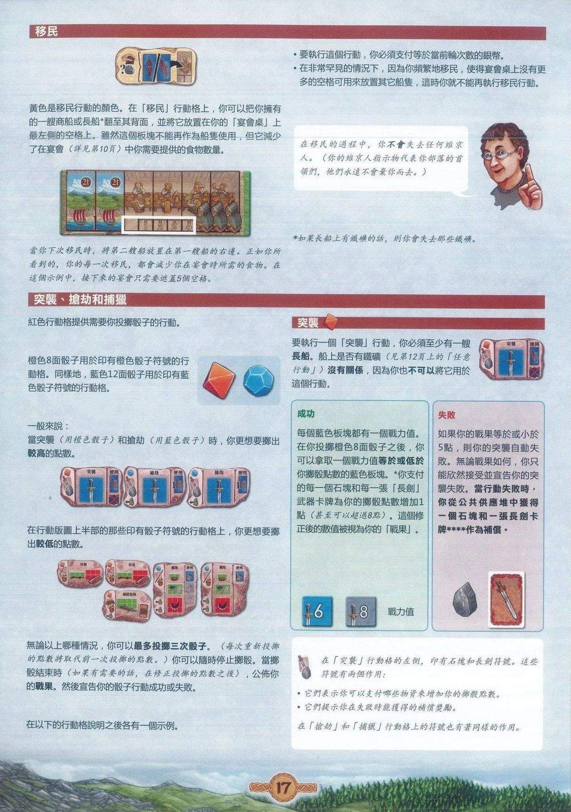
移民——黄色是移民行动的颜色。在「移民」行动格上，你可以把你拥有的一艘商船或长船*翻至其背面，并将它放置在你的「宴会桌」上最左侧的空格上。虽然这个板块不能再作为船只使用，但它减少了在宴会（详见第 10 页）中你需要提供的食物数量。当你下次移民时，将第二艘船放置在第一艘船的右边。正如你所看到的，你的每一次移民，都会减少你在宴会时所需的食物。
- 要执行这个行动，你必须支付等于当前轮次数的银币。
- 在非常罕见的情况下，因为你频繁地移民，使得宴会桌上没有更多的空格可用来放置其它船只，这时你就不能再执行移民行动。
*如果长船上有铁矿的话，则你会失去那些铁矿。（设计者提示：在移民的过程中，你不会失去任何维京人。你的维京人指示物代表你部落的首领们，他们永远不会弃你而去。）
突袭、抢劫和捕猎——红色行动格提供需要你投掷骰子的行动。橙色 8 面骰子用于印有橙色骰子符号的行动格；同样地，蓝色 12 面骰子用于印有蓝色骰子符号的行动格。一般来说：当突袭（用橙色骰子）和抢劫（用蓝色骰子）时，你更想要掷出较高的点数。在行动版图上半部的那些印有骰子符号的行动格上，你更想要掷出较低的点数。无论以上哪种情况，你可以最多投掷三次骰子。（每次重新投掷的点数将取代前一次投掷的点数。）你可以随时停止掷骰。当掷骰结束时（如果有需要的话，在修正投掷的点数之后），公布你的战果。然后宣告你的骰子行动成功或失败。
突袭——要执行一个「突袭」行动，你必须至少有一艘长船。船上是否有铁矿（见第 12 页上的「任意行动」）没有关系，因为你也不可以将它用于这个行动。成功：每个蓝色板块都有一个战力值。在你投掷橙色 8 面骰子之后，你可以拿取一个战力值等于或低于你掷骰点数的蓝色板块。*你支付的每一个石块和每一张「长剑」武器卡牌为你的掷骰点数增加 1 点（甚至可以超过 8 点）。这个修正后的数值被视为你的「战果」。失败：如果你的战果等于或小于 5 点，则你的突袭自动失败。无论战果如何，你只能欣然接受并宣告你的突袭失败。当行动失败时，你从公共供应堆中获得一个石块和一张长剑卡牌作为补偿。在「突袭」行动格的左侧，印有石块和长剑符号。这些符号有两个作用：它们表示你可以支付哪些物资来增加你的掷骰点数；它们提示你在失败时能获得的补偿奖励。在「抢劫」和「捕猎」行动格上的符号也有着同样的作用。
突袭失败示例 · 抢劫
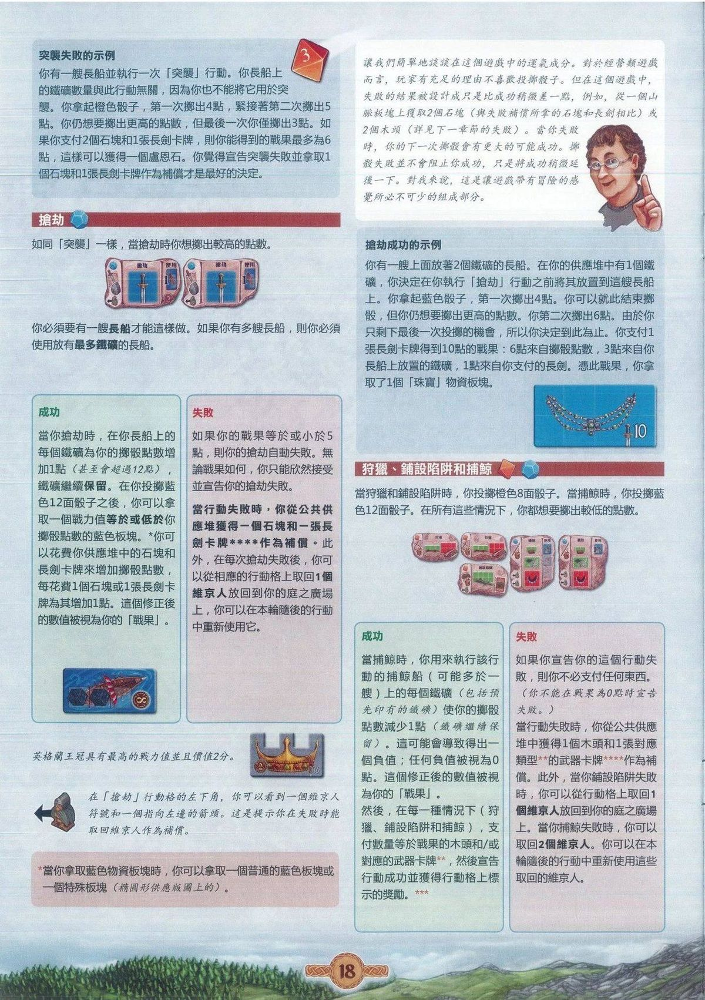
突袭失败的示例：你有一艘长船并执行一次「突袭」行动。你拿起橙色骰子，第一次掷出 4 点。紧接着第二次掷出 5 点。你仍想要掷出更高的战果，但最后一次你仅掷出 3 点。如果你支付 2 个石块和 1 张长剑卡牌，则你能得到的点数最多为 6 点。这样可以以获得一个蓝色板块。你觉得宣告突袭失败并拿取 1 个石块和 1 张长剑卡牌作为补偿才是最好的决定。
让我们简单地谈论在这个游戏中的运气成分。对于捕猎和抢劫而言，玩家有充足的理由不喜欢投掷骰子。但在这个游戏中，失败的结果被设计成只是比成功稍微差一点。例如，从一个山脉板块上获取 2 个石块与拿取石块和长剑相比只差 2 个木头（详见下一章节的示例）。即使失败，你的下一次掷骰会有更大的可能成功。轻微失败并不会阻止你成功，只是将成功稍稍延迟一下。对我来说，这是让游戏带有冒险的感觉所必不可少的组成部分。
抢劫——如同「突袭」一样，当抢劫时你想掷出较高的点数。你必须有一艘长船才能这样做。如果你有多艘长船，则你必须使用放置最多铁矿的长船。
成功：当你抢劫时，在你长船上的每个铁矿为你的掷骰点数增加 1 点（甚至会超过 12 点）。当掷骰结束后，在你投掷 12 面骰子之后，你可以拿取一个战力值等于或低于你掷骰点数的蓝色板块。*你可以花费你供应堆中的石块和长剑卡牌来增加掷骰点数，每花费 1 个石块或 1 张长剑卡牌为其增加 1 点。这个修正后的数值被视为你的「战果」。英格兰王冠具有最高的战力值且价值 2 分。在「抢劫」行动格的左下角，你可以看到一个维京人符号和一个指向左边的箭头——这是提示你在失败时能取回维京人作为补偿。*当你拿取蓝色物资板块时，你可以拿取一个普通的蓝色板块或一个特殊板块（椭圆形供应版图上的）。
失败：如果你的战果等于或小于 5 点，则你的抢劫自动失败。无论战果如何，你只能欣然接受并宣告你的抢劫失败。当行动失败时，你从公共供应堆中获得一个石块和一张长剑卡牌作为补偿。此外，在每次抢劫失败后，你可以从相应的行动格上取回 1 个维京人放回到你的庭之广场上。你可以在你确定后的行动中重新使用它。
抢劫成功的示例：你有一艘上面放置 2 个铁矿的长船。在你的供应堆中有 1 个铁矿，你决定在你执行「抢劫」行动之前将其放置到这艘长船上。你拿起蓝色骰子。第一次掷出 4 点。你可以就此结束掷骰，但你仍想要掷出更高的点数。你第二次掷出 6 点。由于你只剩下最后一次投掷的机会，所以你决定到此为止。你支付 1 张长剑卡牌得到 10 点的战果：6 点来自掷骰点数，3 点来自你长船上放置的铁矿，1 点来自你支付的长剑。以此战果，你拿取了 1 个「珠宝」物资板块。
狩猎、铺设陷阱和捕鲸
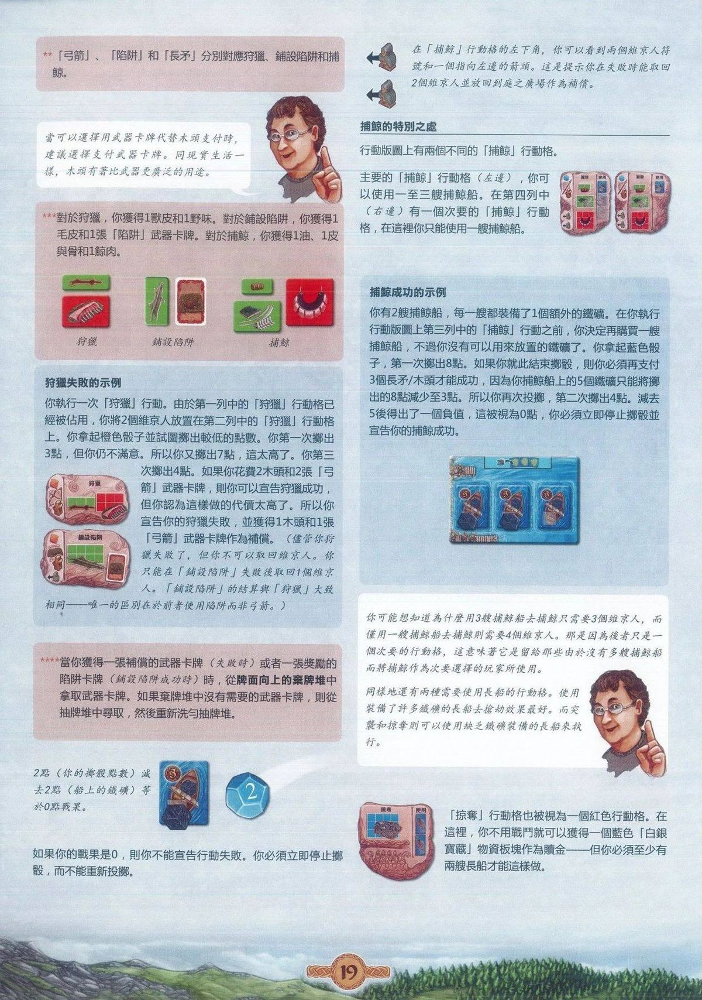
当狩猎和铺设陷阱时，你投掷橙色 8 面骰子。当捕鲸时，你投掷蓝色 12 面骰子。在所有这些情况下，你却想要掷出较低的点数。
成功：当捕鲸时，你用来执行该行动的捕鲸船（可能多于一艘）上的每个铁矿（包括预先印有的铁矿）使你的掷骰点数减少 1 点（帮助获得成功）。这可能会导致得到一个负值；任何负值被视为 0 点。这个修正后的数值被视为你的「战果」。
失败：如果你宣告你的这个行动失败，则你不必支付任何东西。（你不能在掷出 0 点时宣告失败。）当行动失败时，你从公共供应堆中获得 1 个木头和 1 张与鹿类型**的武器卡牌作为补偿。此外，当你铺设陷阱失败时，你可以从行动格上取回 1 个维京人放回到你的庭之广场上；当你捕鲸失败时，你可以取回 2 个维京人。你可以在本轮随后的行动中重新使用这些取回的维京人。
**「弓箭」、「陷阱」和「长矛」分别对应狩猎、铺设陷阱和捕鲸。***当你获得一张补偿的武器卡牌（失败时）或者一张奖励的陷阱卡牌（铺设陷阱成功时）时，从牌面向上的弃牌堆中拿取武器卡牌。如果弃牌堆中没有需要的武器卡牌，则从抽牌堆中寻取，然后重新洗匀抽牌堆。
狩猎失败的示例：你执行一次「狩猎」行动。由于第一列中的「狩猎」行动格已被占用，你将 2 个维京人放置在第二列中的「狩猎」行动格上。你拿起橙色骰子并试图掷出较低的点数。你第一次掷出 3 点，但你仍不满意。所以你又掷出 7 点，这太高了。你第三次掷出 4 点。如果你花费 2 木头和 2 张「弓箭」武器卡牌，则你可以宣告狩猎成功，但你认为这样做的代价太高了。所以你宣告你的狩猎失败，并获得 1 木头和 1 张「弓箭」武器卡牌作为补偿。（尽管你狩猎失败了，但你不可以取回维京人。你只能在「铺设陷阱」失败后取回 1 个维京人。「铺设陷阱」的结果与「狩猎」大致相同——唯一的区别在于前者使用陷阱而非弓箭。）
捕鲸成功的示例：你有 2 艘捕鲸船，每一艘都装备了 1 个额外的铁矿。在你执行行动版图上第三列中的「捕鲸」行动之前，你决定再购买一艘捕鲸船，不过你没有可以用来放置的铁矿了。你拿起蓝色骰子，第一次掷出 8 点。如果你就此结束掷骰，则你必须再支付 3 个长矛/木头才能成功，因为你捕鲸船上的 5 个铁矿只能将掷出的 8 点减少至 3 点。所以你再次投掷，第二次掷出 4 点。减去 5 后得出了一个负值，这被视为 0 点，你必须立即停止掷骰并宣告你的捕鲸成功。
你可能想知道为什么用 3 艘捕鲸船去捕鲸只需要 3 个维京人，而仅用一艘捕鲸船去捕鲸则需要 4 个维京人。那是因为后者只是一个次要的行动格，这意味着它是留给那些由于没有多艘捕鲸船而将捕鲸作为次要选择的玩家所使用。同样地还有两栏需要使用长船的行动格。使用装满了许多铁矿的长船去抢劫效果最好。而突袭和掠夺则可以使用缺乏铁矿装备的长船来执行。「掠夺」行动格也被视为一个红色行动格。在这里，你不用战斗就可以获得一个蓝色「白银宝藏」物资板块作为赎金——但你必须至少有两艘长船才能这样做。
探索 · 职业 · 4 人游戏的扩展板块
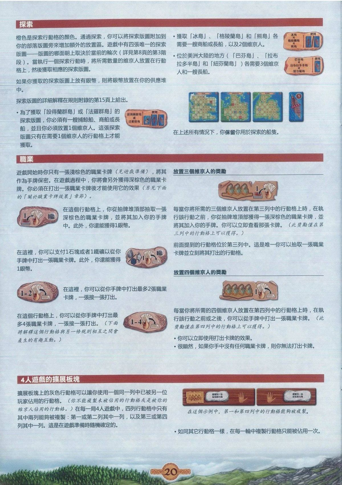
探索——橙色是探索行动格的颜色。通过探索，你可以将探索版图附加到你的部落版图旁来增加额外的放置区。游戏中有四张唯一的探索版图——版图的第一面即未翻的背面（详见第 8 页的第 3 阶段）。一般执行一面探索行动时，将所需数量的维京人放置在行动格上，然后获取相应的探索版图。如果你获取的探索版图上放有银币，则将银币放置在你的供应堆中。探索版图的详细解释在规则附录的第 15 页上给出。
- 为了获取「设得兰群岛」或「法罗群岛」的探索版图，你必须有一艘捕鲸船、商船或长船，并且你必须放置 1 个维京人。这张探索版图只有在需要 1 个维京人的行动格上才能获取。
- 获取「冰岛」、「格陵兰岛」和「熊岛」各需要一艘商船或长船，以及 2 个维京人。
- 位于美洲大陆的地方（「巴芬岛」、「拉布拉多半岛」和「纽芬兰岛」）各需要 3 个维京人和一艘长船。
在上述所有情况下，你保留你用于探索的船只。
职业——游戏开始时你只有一张浅棕色的职业卡牌（见游戏准备）。将其作为手牌保密。在游戏过程中，你将会另外获得深棕色的职业卡牌。你必须在打出一张职业卡牌后才能使用它的效果（参见下面「关于职业卡牌效果」章节）。
- 在这个行动格上，你从抽牌堆顶部抽取一张深棕色的职业卡牌，并将其加入你的手牌中。此外，你还能获得 1 银币。
- 在这里，你可以支付 1 石块或者 1 铁矿以从你手牌中打出一张职业卡牌。此外，你还能获得 1 银币。
- 在这里，你可以从你手牌中打出最多 2 张职业卡牌，一张接一张打出。
- 在这个行动格上，你可以从你手牌中打出最多 4 张职业卡牌，一张接一张打出。（下面牌组选择这行动格视为一条说明相互之间会产生冲突的有趣互动。）
放置三个维京人的奖励：每当你将所需的三个维京人放置在第三列中的行动格上时，在执行该行动之前，你从抽牌堆顶部获得一张深棕色的职业卡牌，并将其加入你的手牌。你可以立即查看那张卡牌。（此奖励仅在第三列中的行动格上可以获得。）前面提到的行动格位于第三列中，这是唯一你可以抽取一张职业卡牌并立刻将其打出的行动格。
放置四个维京人的奖励：每当你将所需的四个维京人放置在第四列中的行动格上时，在执行该行动之前或之后，你可以从手牌中打出一张职业卡牌。（此奖励仅在第四列中的行动格上可以获得。）你可以立即使用打出卡牌的效果。很显然，如果你手中没有任何职业卡牌，则你无法打出卡牌。
4 人游戏的扩展板块——扩展板块上的灰色行动格可以让你使用一个同一列中已被另一位玩家占用的行动格。（你不能将数量未使用的行动格板块来标记你的维京人占用的行动格。）在每一局 4 人游戏中，四列行动格中只有其中两列将被复制：第一或第二列其中一列，以及第三或第四列其中一列。这是在游戏准备时随机确定的。如同其它行动格一样，在每一轮中复制行动格只能被占用一次。
关于职业卡牌效果
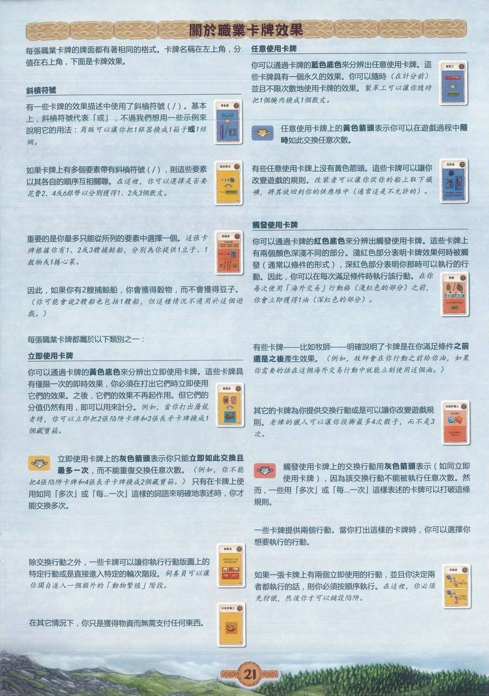
每张职业卡牌的牌面都有着相同的格式。卡牌名称在左上角，分值在右上角，下面是卡牌效果。
斜杠符号：有一些卡牌的效果描述中使用了斜杠符号（/）。基本上，斜杠符号代表「或」，不过我们想用一些示例来说明它的用法。商队可以让你把 1 条链换成 1 箱子或 1 头牲畜。如果卡牌上有多个要素带有斜杠符号（/），则这些要素以各自的顺序互相关联。在这里，你可以选择是要花费 2、4 或 6 头牛以分别获得 1、2 或 3 头熊。重要的是你最多只能从列出的要素中选择一个。这张卡牌根据你有 1、2 或 3 头猪分别为你提供 1 豆子、1 谷物或 1 卷心菜。因此，如果你有 2 艘捕鲸船，你会获得谷物，而不会获得豆子。（你可能会说 2 艘船也包括 1 艘船，但这种情况不适用于这张卡牌。）每张职业卡牌都属于以下类别之一：
立即使用卡牌：你可以通过卡牌的黄色底色来分辨出立即使用卡牌。这些卡牌具有惟一一次的即时效果。你必须在打出它们时立即使用它们的效果。之后，它们的效果不再起作用。但它们的数值仍然有用，即可以用来计分。例如，当你打出药剂师时，你可以立即把 2 张陷阱卡牌和 2 张长矛卡牌换成 1 个藏宝箱。立即使用卡牌上的灰色箭头表示你只能立即如此交换且最多一次，而不能重复交换任意次数。（例如，你不能把 4 张陷阱卡牌和 4 张长矛卡牌换成 2 个藏宝箱。）只有在卡牌上使用如同「多次」或「每…一次」这样的词语来明确地表达时，你才能交换多次。除交换行动之外，一些卡牌可以让你执行行动版图上的特定行动或是直接进入特定的轮次阶段。在其它情况下，你只是获得物资而无需支付任何东西。
任意使用卡牌：你可以通过卡牌的蓝色底色来分辨出任意使用卡牌。这些卡牌具有一个永久的魔力。你可以随时（在计分前）并且不限次数地使用卡牌的效果。制革工可以让你随时把 1 张鹿皮换成 1 张兽皮。任意使用卡牌上的黄色箭头表示你可以在游戏过程中随时如此交换任意次数。有些任意使用卡牌上没有黄色箭头。这些卡牌可以让你改变游戏的规则。旅行者可以让你从你的船上取下铁矿，将其放回到你的供应堆中（通常这是不允许的）。
触发使用卡牌：你可以通过卡牌的红色底色来分辨出触发使用卡牌。这些卡牌上有两个颜色深浅不同的部分。浅色部分表明卡牌效果何时被触发（通常以条件的形式），深红色部分表明你那时可以执行的行动。因此，你可以在每次满足条件时执行该行动。在你每次使用「海外交易」行动格（浅红色的部分）之前，你会立即获得 1 油（深红色的部分）。有些卡牌——比如牧师——明确说明了卡牌是在你满足条件之前还是之后产生效果。（例如，我会在你行动之前给你油。如果你需要在活动海外交易行动中就能立刻使用这个油。）其它的卡牌为你提供交换行动或是可以让你改变游戏规则。去牌的製人可以让你投掷最多 4 次骰子，而不是 3 次。
顺便使用卡牌上的交换行动用灰色箭头表示（如同立即使用卡牌），因为该交换行动不能被执行任意次数。然而，一些用「多次」或「每…一次」这样表述的卡牌可以打破这条规则。一些卡牌提供两个行动。当你打出这样的卡牌时，你可以选择你想要执行的行动。如果一张卡牌上有两个立即使用的行动，并且你决定两者都执行的话，则你必须按照顺序执行。在这里，你必须先狩猎，然后你才可以设置陷阱。
限制使用卡牌 · 配件用尽
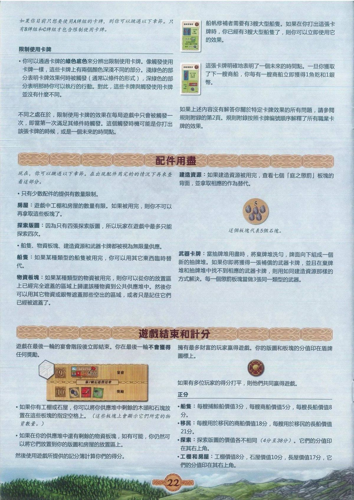
如果你目前只是想要使用 A 牌组的卡牌，则你可以跳过以下章节。只有 B 牌组和 C 牌组才包含限制使用卡牌。
限制使用卡牌：你可以通过卡牌的绿色底色来分辨出限制使用卡牌。像触发使用卡牌一样，这些卡牌上有两个颜色深浅不同的部分。浅绿色的部分表明卡牌何时被触发（通常以条件的形式），深绿色的部分表明那时你将执行的行动。对此，这些卡牌与触发使用卡牌并没有什么不同。不同之处在于，限制使用卡牌的效果在每局游戏中只会被触发一次，即当第一次满足其条件时触发。这个触发时机可能是你打出该张卡牌的时候，或是一个未来的时间点。船帆修补者需要有 3 艘大型船只。如果你在你打出这张卡牌时，你已经有 3 艘大型船只了，则你可以立即使用它的效果。这张卡牌明确地表明了一个未来的时间点：一旦你获取了下一艘商船，你每有一艘商船立即获得 1 点战果和 1 银币。如果上述内容没有解答你关于特定卡牌效果的所有问题，请参阅规则附录的第 2 页。规则附录按照卡牌编号顺序解释了所有职业卡牌的效果。
配件用尽（现在，你可以忽略以下章节。在出现配件用完的情况下再来查看这部分）：
- 只有少数配件的提供有数量限制。房屋：游戏中工棚和房屋的数量有限。如果被用完，则你不可以再拿取这些板块了。探索版图：因为只有四张探索版图，所以玩家在游戏中最多只能探索四次。
- 船只、物资板块、建造资源和武器卡牌都被视为无限量供应。触发：如果某种类型的船只被用完，你可以用其它东西临时替代。物资板块：如果某种类型的物资被用完，则你可以从你的放置区上已经完全遮盖的区域上归还该类型物资到公共供应堆中。然后你可以用其它物资或者银币遮盖那些空出的区域，或者只是记住它们已经被遮盖了。
- 建造资源：如果建造资源被用完，查看七个「庭之惩罚」板块的背面，并拿取相应的作为替代。
- 武器卡牌：当牌堆用尽时，将弃牌堆洗匀，牌面向下组成一个新的抽牌堆。如果你即将获得一张补偿的武器卡牌，并且在弃牌堆和抽牌堆中找不到相应的武器卡牌，则用如同建造资源那样的方式解决。每一个橡树果板块当做 3 张同一类型的武器。
游戏结束和计分
游戏在最后一轮的宴会阶段立即结束。你在最后一轮不会获得任何奖励。拥有最多财富的玩家赢得游戏。你的版图和板块的分值印在盾牌图标上。如果有多位玩家的得分打平，则他们共同赢得游戏。
正分：
- 船只：每艘捕鲸船价值 3 分，每艘商船价值 5 分，每艘长船价值 8 分。
- 移民：每艘用于移民的商船价值 18 分，每艘用于移民的长船价值 21 分。
- 探索：探索版图的价值各不相同（4 分至 38 分）。它们的分值印在其右上角。
- 工棚和房屋：工棚价值 8 分，石屋价值 10 分，长屋价值 17 分，它们的分值印在其右上角。
- 羊和牛：每只羊价值 2 分（怀孕的 3 分），每头牛价值 3 分（怀孕的 4 分）。
- 职业卡牌：职业卡牌的分值印在其右上角。只有已经打出的职业卡牌才可计分。
- 银币：统计你供应堆中的银币总数。放置在版图和房屋上的银币不计分。
- 最终收入：你可以将最后一轮的收入填写在计分表的「最终收入」栏内，代表获得这些收入。
- 拥有「英格兰王冠」特殊板块的玩家，无论该板块是位于他的供应堆中还是他的版图上都能获得额外的 2 分。
负分：将你的正分总和，减去你的版图和建筑上的负分，其中包括你的部落版图，探索版图以及工棚和房屋。此外，也不要忘记你的庭之惩罚，如果你有的话。（见第 11 页的「第 9 阶段：宴会」。）
玩家可能会将彼此不能相邻放置的物资板块相邻地放在一起。当发生这种情况时立即纠正错误。如果注意到这个错误时已太晚而无法纠正，你则可以在计分时惩罚这样的玩家：该玩家每有一对放置错误的板块获得 1 个庭之惩罚。这里有两个示例——在左边的示例中，一位玩家已连续放置了三对绿色物资，因此有两对绿色板块相邻，所以获得两个庭之惩罚总共 -6 分；在右边的示例中，错误更加严重：这三个物资都被放置成彼此任何相邻板条相邻，所以获得三个庭之惩罚总共 -9 分。
单人游戏
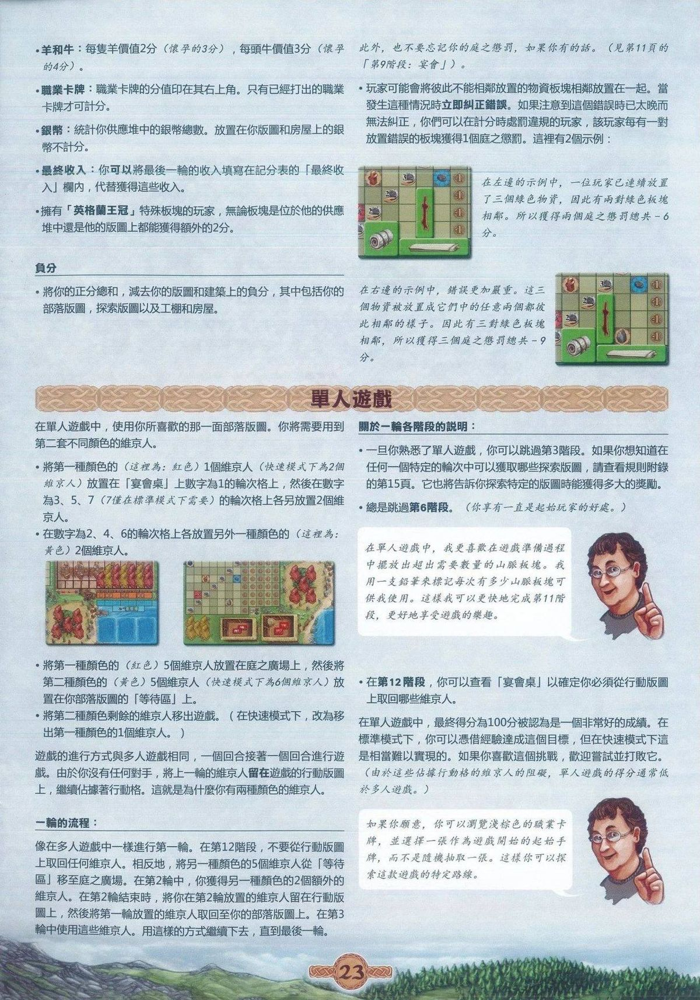
在单人游戏中，使用你喜欢的那一面部落版图。你将需要用到第二套不同颜色的维京人。
- 将第一种颜色的（这里为：红色）1 个维京人（快速模式下为 2 个维京人）放置在「宴会桌」上数字与 1 的轮次格上，然后在数字为 3、5、7（7 仅在标准模式下需要）的轮次格上各另外放置 2 个维京人。
- 在数字为 2、4、6 的轮次格上各放置另外一种颜色的（这里为：黄色）2 个维京人。
- 将第一种颜色的（红色）5 个维京人放置在庭之广场上，然后将第二种颜色的（黄色）6 个维京人（快速模式下第 6 个维京人）放置在你部落版图的「等待区」上。
- 将第二套 colours 剩余的维京人移出游戏。（在快速模式下，改为移出第一种颜色的 1 个维京人。）〔句中残留英文，原书如此〕
游戏的进行方式与多人游戏相同，一个回合接着一个回合进行游戏。由于你没有任何对手，将上一轮的维京人留在游戏的行动版图上，继续占据着行动格。这就是为什么你有两种颜色的维京人。
一轮的流程：像在多人游戏中一样进行第一轮。在第 12 阶段，不要从行动版图上取回任何维京人。相反地，将另一种颜色的 5 个维京人从「等待区」移至庭之广场。在第 2 轮中，你获得另一种颜色的 2 个额外的维京人。在第 2 轮结束时，将你在第 2 轮放置的维京人留在行动版图上，然后将第一轮放置的维京人取回到你的部落版图上。在第 3 轮中使用这些维京人。用这样的方式继续下去，直到最后一轮。
关于省略各阶段的说明：一旦你熟悉了单人游戏，你可以跳过第 3 阶段。如果你想知道在任何一个特定的轮次中可以获取哪些探索版图，请查看规则附录的第 15 页，它也将告诉你探索特定的版图将能获得多大的奖励。总是跳过第 6 阶段。（可以一直是起始玩家的好处。）
在第 12 阶段，你可以查看「宴会桌」以确定你必须从行动版图上取回哪些维京人。
在单人游戏中，最终得分为 100 分被视为是一个非常好的成绩。在标准模式下，你可以凭借经验达成这个目标。但在快速模式下这是相当难以实现的。如果你喜欢这个挑战，欢迎尝试并打败它。（由于这些任务行动格的维京人的限制，单人游戏的得分通常低于多人游戏。）如果你愿意，你可以调整浅棕色的职业卡牌，并选择一张作为游戏开始的起始手牌，而不是随机抽取一张。这样你可以探索你最喜欢的特殊策略。〔"特情策略"疑为"特殊策略"，原书如此〕
致谢名单
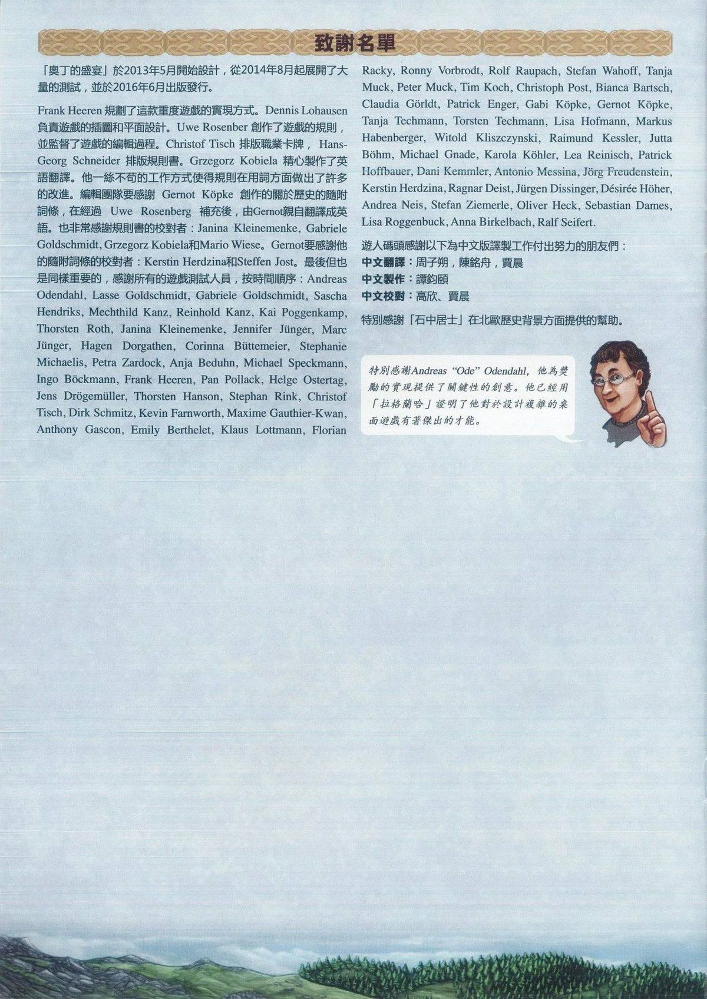
「奥丁的盛宴」于 2013 年 5 月开始设计，从 2014 年 8 月起展开了大量的测试，并于 2016 年 6 月出版发行。Frank Heeren 想到了这款重度游戏的表现方式。Dennis Lohausen 负责游戏的插画和平面设计。Uwe Rosenberg 制作了游戏的规则，并监督了游戏的编辑过程。Christof Tisch 排版职业卡牌，Hans-Georg Schneider 排版规则书。Grzegorz Kobiela 精心制作了英语翻译。编辑团队要感谢 Gernot Köpke 创作的关于历史的随附词条，在经过 Uwe Rosenberg 补充后，由 Gemo1 亲自翻译成英语。也感谢规则书的校对者：Janina Kleinemenke, Gabriele Goldschmidt, Grzegorz Kobiela 和 Mario Wiese。游人码头感谢以下为中文版译制工作付出努力的朋友们：中文翻译：周子翔，陳銘舟，賈晨；中文制作：譚鈞碩；中文校对：高欣、賈晨。特别感谢「石中居士」在北欧历史背景方面提供的帮助。（设计者提示：特别感谢 Andreas "Ode" Odendahl，他为奖励的呈现提供了关键性的创意。他已经用「拉格蘭哈」证明了他对于设计复杂的桌面游戏有著傑出的才能。全部测试人员名单请见扫描页。）
规则附录：职业卡牌索引（卡牌 1-190）
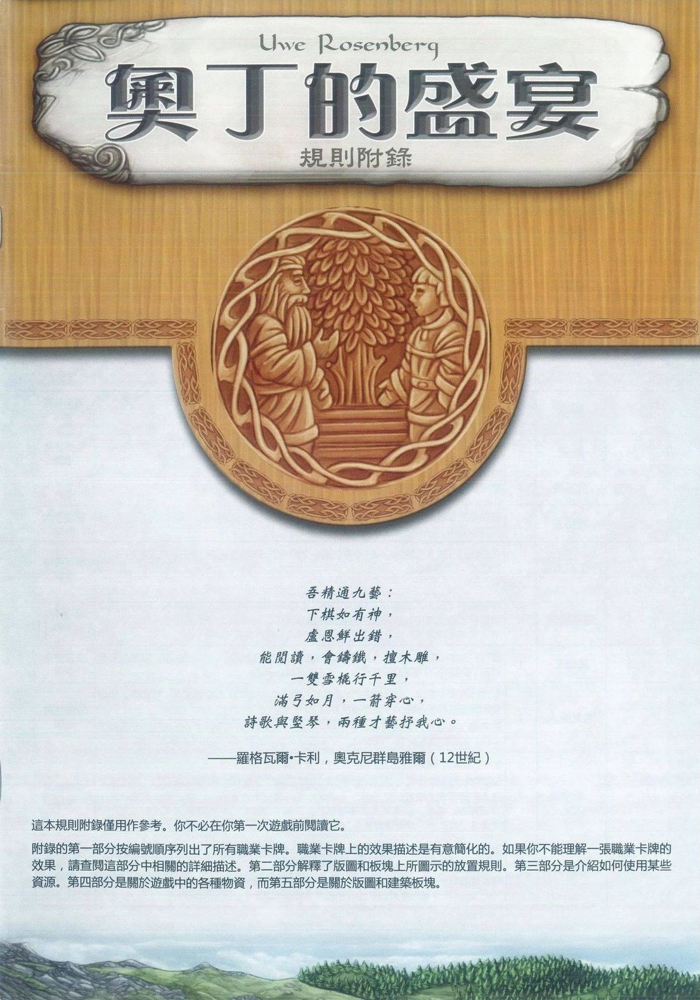
这本规则附录仅用作参考。你不必在你第一次游戏前阅读它。附录的第一部分按编号顺序列出了所有职业卡牌。职业卡牌上的效果描述是有意简化的。如果你不能理解一张职业卡牌的效果，请查阅这部分中相关的详细描述。第二部分解释了版图和板块上所图示的放置规则。第三部分是介绍如何使用某些资源。第四部分是关于游戏中的各种物资，而第五部分是关于版图和建筑板块。
职业卡牌索引体例：每张职业卡牌的右下角有一个编号，这能帮助玩家在卡牌列表中更快速的找到卡牌。在基础规则的第 21-22 页上有关于卡牌基本规则解释。起始职业卡牌上印有小写字母（a、b、c），而你在游戏过程中抽取的职业卡牌上印有大写字母（A、B、C）。一般来说：当一张职业卡牌上的文字效果与规则有冲突时，以卡牌优先。以下几页为全部 190 张卡牌的逐条表格（序号／牌堆／卡牌名称／分数／卡牌详解／类型），类型分为立即使用卡牌、触发使用卡牌、任意使用卡牌、限制使用卡牌。首尾条目示例：1 A 商販 0（略微使用卡牌）……186 A 豌豆麵包工 3、187 B 史學家 2、188 C 採礦工人 0。因表格为密集小字，请直接放大下方扫描图查阅。
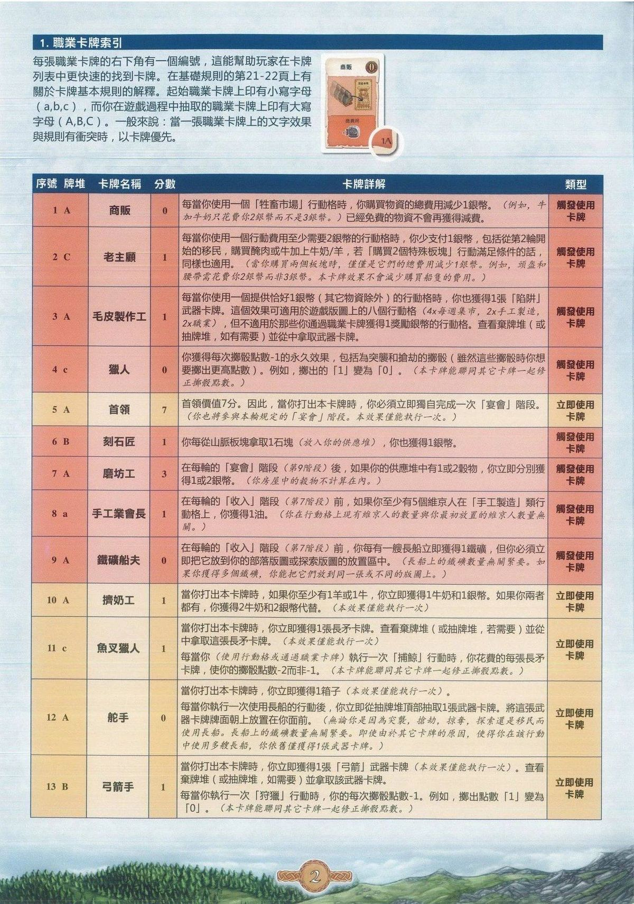
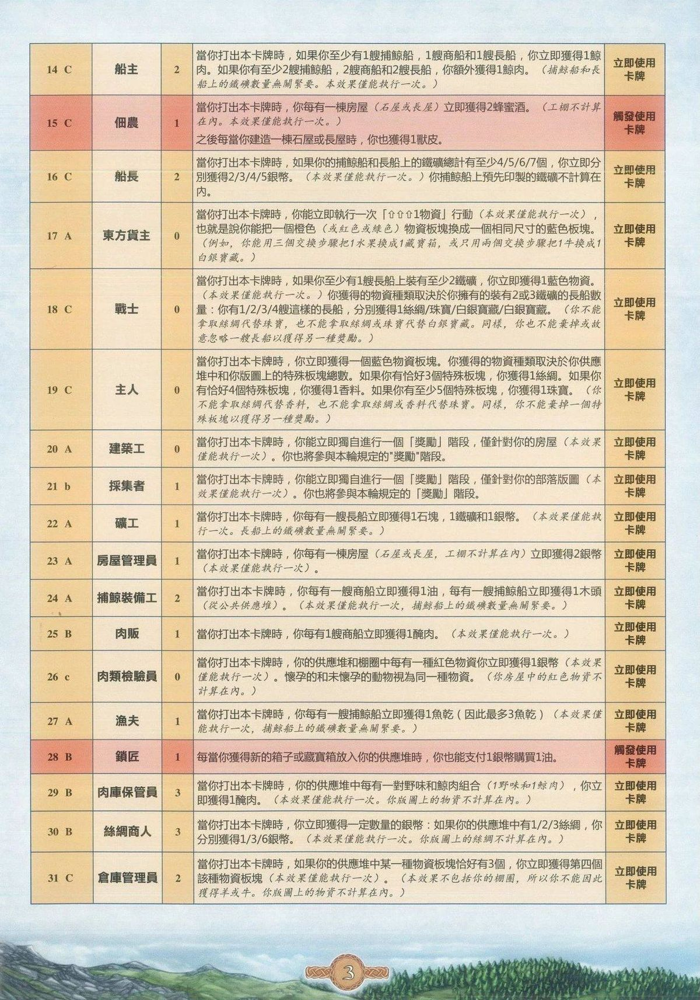
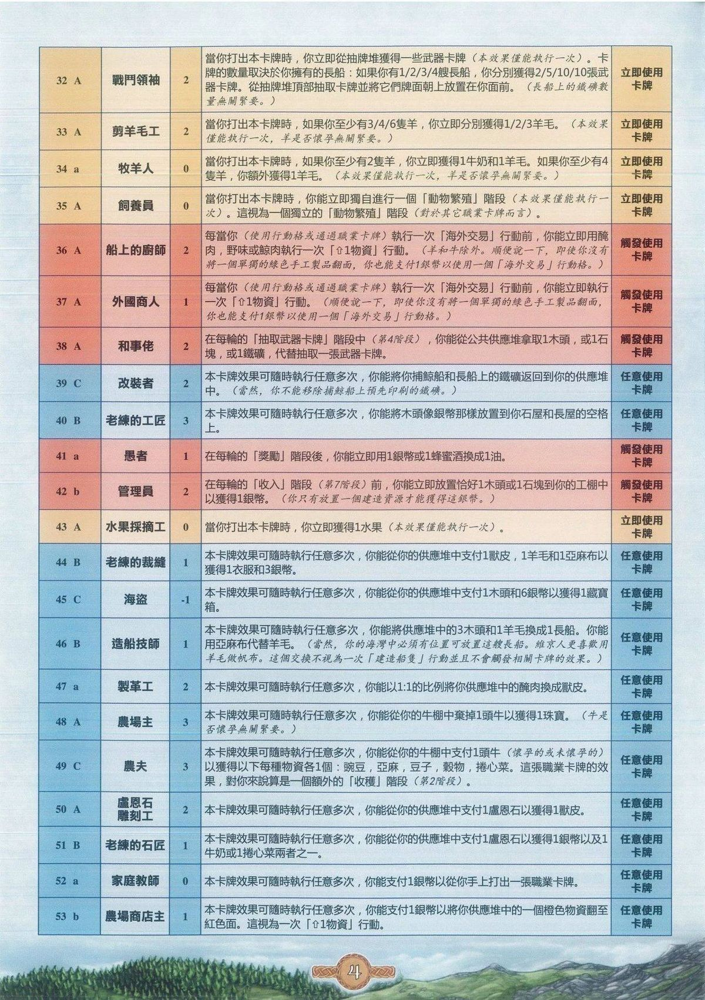
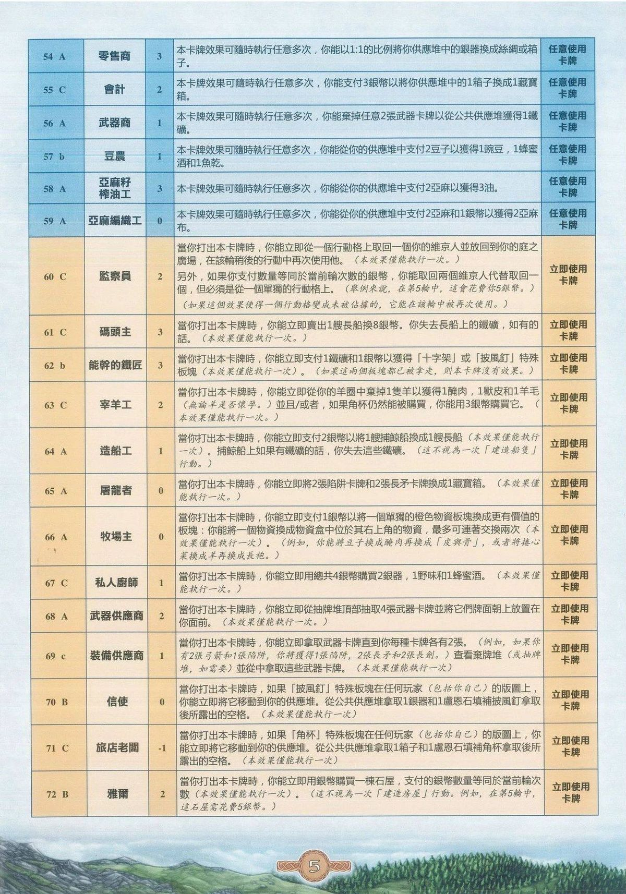
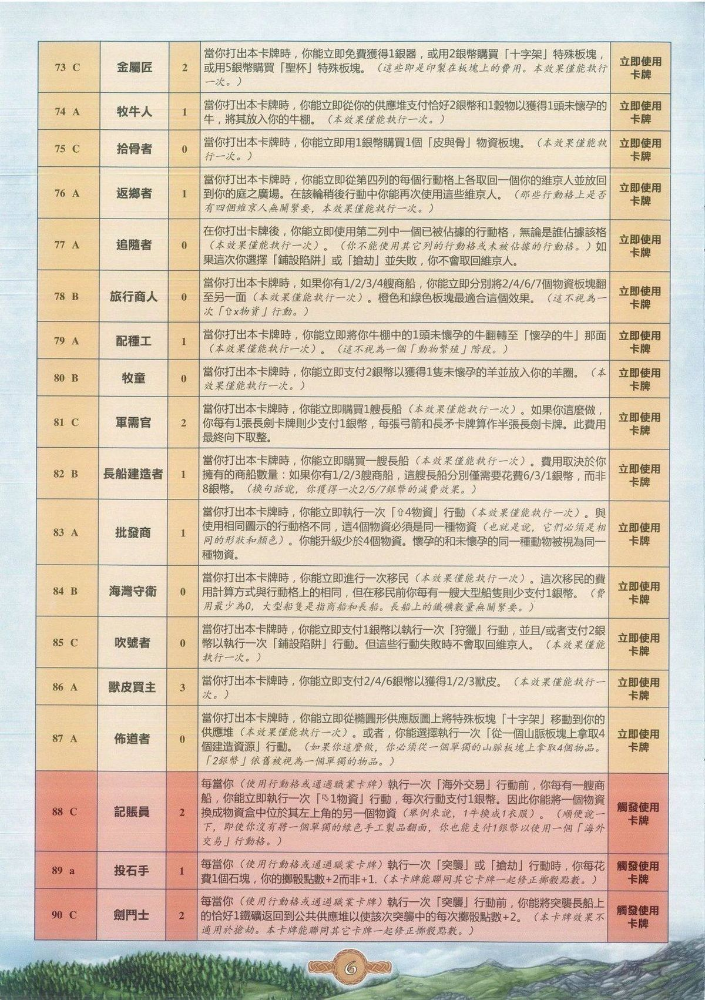
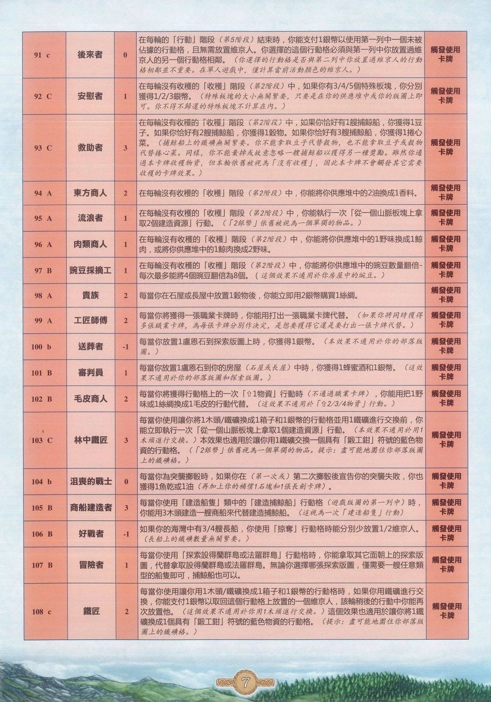
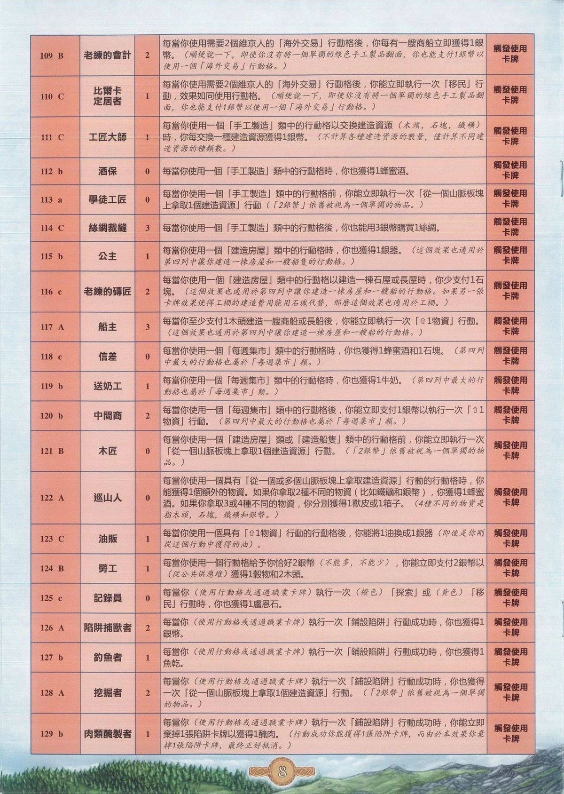
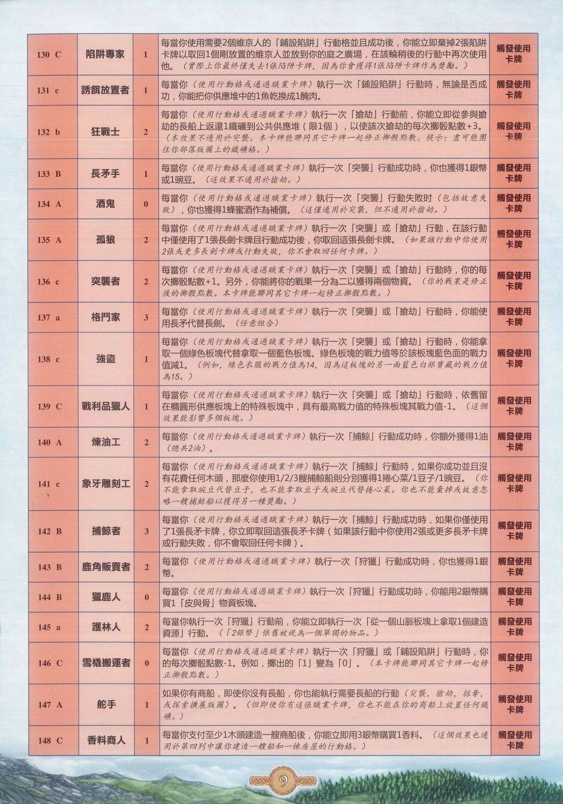
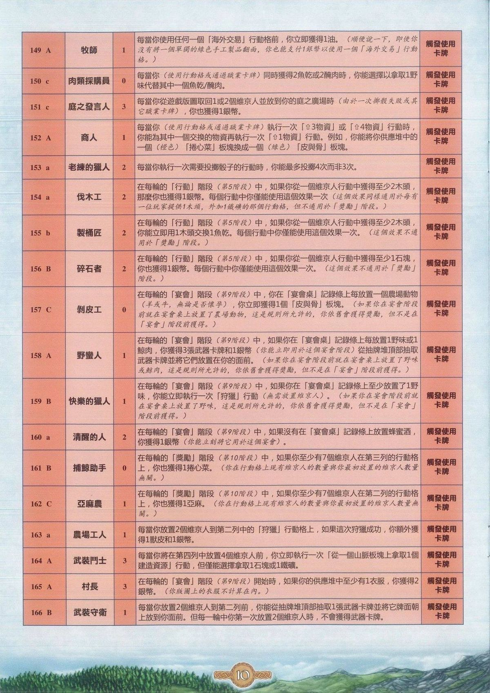
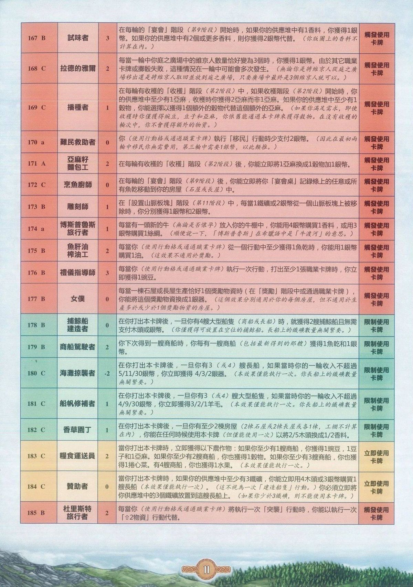
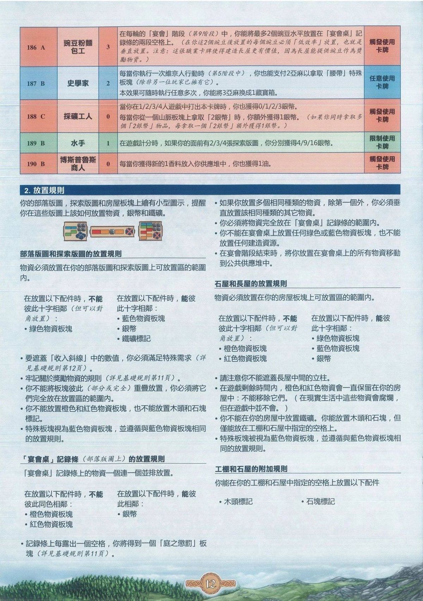
规则附录：资源
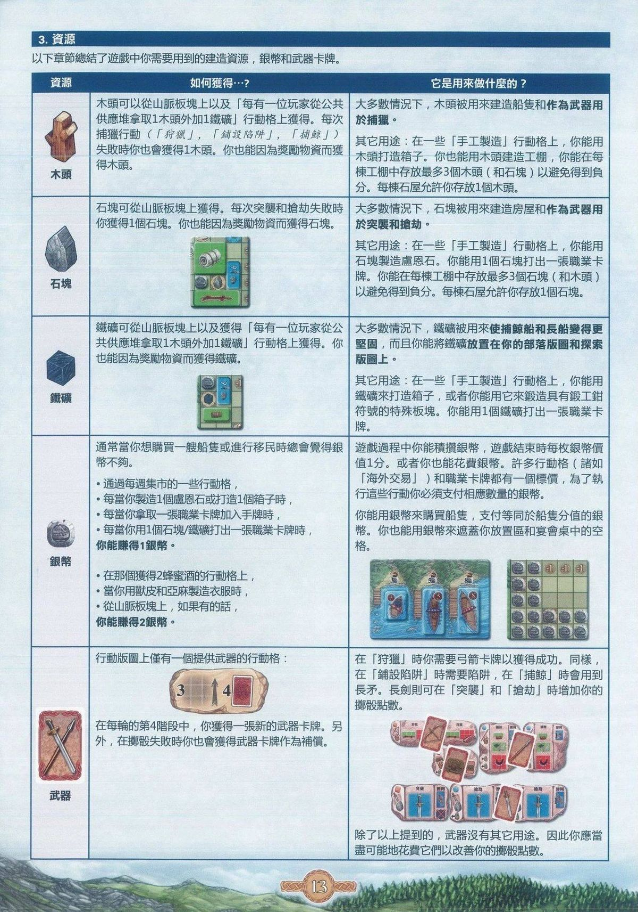
以下章节总结了游戏中你需要用到的建造资源，银币和武器卡牌。
木头——获得：从山脉板块上以及「每一位玩家从公共供应堆拿取1木头外加以1鐵礦」行动格上获得；每次捕猎行动（「狩猎」、「铺设陷阱」、「捕鲸」）失败时你也会获得 1 木头；你也能因为奖励物资而获得木头。用途：大多数情况下，木头被用来建造船只和作为武器用于捕鲸。其它用途：在一些「手工制造」行动格上，你能用木头打造箱子。你也能用木头建造工棚，你能在每栋工棚中存放最多 3 个木头（和石块）以避免得到负分。每栋石屋允许你存放 1 个木头。
石块——获得：可从山脉板块上获得；每次突袭和抢劫失败时你获得 1 个石块；也能因奖励物资而获得。用途：大多数情况下，石块被用来建造房屋和作为武器用于突袭和抢劫。其它用途：在一些「手工制造」行动格上，你能用石块制造卢恩石。你能用 1 个石块打出一张职业卡牌。你能在每栋石屋中存放最多 3 个石块（和木头）以避免得到负分。每栋石屋允许你存放 1 个石块。
铁矿——获得：可从山脉板块上以及「每一位玩家从公共供应堆拿取1木头外加以1鐵礦」行动格上获得；也能因奖励物资而获得。用途：大多数情况下，铁矿被用来使捕鲸船和长船变得更坚固，而且你能将铁矿放置在你的部落版图和探索版图上。其它用途：在一些「手工制造」行动格上，你能用铁矿来打造箱子，或者你能用它来获得具有该工钳符号的特殊板块。你能用 1 个铁矿打出一张职业卡牌。
银币——获得：通过每周集市的一些行动格；每当你制造 1 个卢恩石或打造 1 个箱子时；每当你拿取一根铁矿牌加入手牌时；每当你用 1 个石块/铁矿打出一张职业卡牌时（获得 1 银币）；在那个获得 2 蜂蜜酒的行动格上；当你用兽皮和亚麻制造衣服时；从山脉板块上，如果有的话（获得 2 银币）。用途：游戏过程中你能积攒银币，游戏结束时每枚银币价值 1 分。或者你也能花费银币。许多行动格（诸如「海外交易」）和职业卡牌都有一个银币图标，为了执行这些行动你必须支付相应数量的银币。你能用银币来购买船只（支付等于船只分值的银币）。你也能用银币来遮盖你放置区和宴会桌中的空格。
武器——行动版图上仅有一个提供武器的行动格：在每轮的第 4 阶段中，你获得一张新的武器卡牌。另外，在掷骰失败时你也会获得武器卡牌作为补偿。用途：在「狩猎」时你需要弓箭卡牌以获得成功；在「铺设陷阱」时需要陷阱；在「捕鲸」时会用到长矛；长剑则可在「突袭」和「抢劫」时增加你的掷骰点数。除了以上提到的，武器没有其它用途。因此你应当尽可能地花费它们以改善你的掷骰点数。
规则附录：物资 · 特殊板块列表
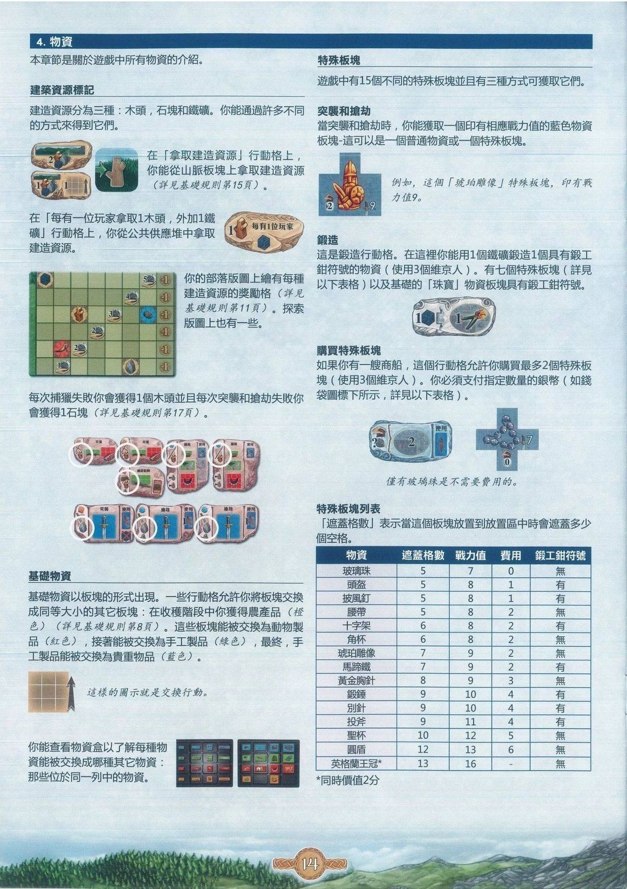
建筑资源标记：建造资源分为三种：木头，石块和铁矿。你会通过许多不同的方式来得到它们。（「拿取建造资源」行动格；「每一位玩家拿取1木头，外加1铁矿」行动格；部落版图上绘有每种建造资源的奖励格；探索版图上也有一些；每次捕猎失败你会获得 1 个木头并且每次突袭和抢劫失败你会获得 1 石块。）
基础物资：基础物资以板块的形式出现。一些行动格允许你将板块交换成同等大小的其它板块：在收获阶段中你获得农产品（橙色），这些板块能被交换为动物制品（红色），接着能被交换为手工制品（绿色），最后，手工制品能被交换为贵重物品（蓝色）。你能查看物资盒以了解每种物资能被交换成哪种其它物资：那些位于同一列中的物资。
特殊板块：游戏中有 15 个不同的特殊板块并且有三种方式可获取它们——
- 突袭和抢劫：当突袭和抢劫时，你能获取一个印有相应战力值的蓝色物资板块。这可以是一个普通物资或一个特殊板块。例如，这个「玻璃雕像」特殊板块印有战力值 9。
- 锻造：这是锻造行动格。在这里你能用 1 个铁矿锻造 1 个具有银工钳符号的物资（使用 3 个维京人）。有七个特殊板块（详见以下表格）以及基础的「珠宝」物资板块具有银工钳符号。
- 购买特殊板块：如果你有一艘商船，这个行动格允许你购买最多 2 个特殊板块（使用 3 个维京人）。你必须支付指定数量的银币（如钱袋图标所示，详见以下表格）。仅有玻璃珠是不需要费用的。
特殊板块列表：「遮盖格数」表示当这个板块放置到放置区中时会遮盖多少个空格。
| 物资 | 遮盖格数 | 战力值 | 费用 | 银工钳符号 |
|---|---|---|---|---|
| 玻璃珠 | 5 | 7 | 0 | 无 |
| 头盔 | 5 | 8 | 1 | 有 |
| 铆钉 | 5 | 8 | 1 | 有 |
| 腰带 | 5 | 8 | 2 | 无 |
| 十字架 | 6 | 8 | 2 | 有 |
| 船杯 | 6 | 8 | 2 | 无 |
| 玻璃雕像 | 7 | 9 | 2 | 无 |
| 马蹄铁 | 7 | 9 | 2 | 无 |
| 鎏金胸针 | 8 | 9 | 3 | 无 |
| 战锤 | 9 | 10 | 4 | 有 |
| 别针 | 9 | 10 | 4 | 有 |
| 斧头 | 9 | 11 | 4 | 有 |
| 圣杯 | 10 | 12 | 5 | 无 |
| 图画 | 12 | 13 | 6 | 无 |
| 英格兰王冠* | 13 | 16 | - | 无 |
*同时价值 2 分
规则附录：版图和板块
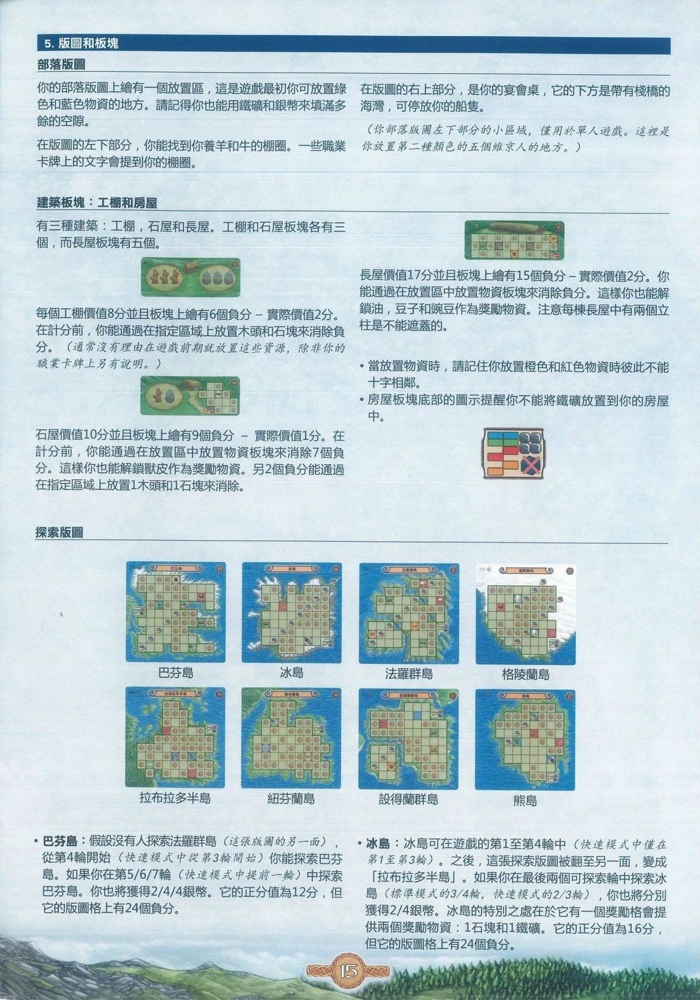
部落版图：你的部落版图上绘有一个放置区，这是游戏最初你可放置绿色和蓝色物资的地方。请记得你也能用铁矿和银币来填满多余的空隙。在版图的左下部分，你能找到你养羊和牛的栅栏。一些职业卡牌上的文字会提到你的栅栏。在版图的右上部分，是你的宴会桌，它的下方是带有栈桥的海湾，可停放你的船只。（你部落版图左下部分的小区域，仅用于单人游戏。这里是你放置第二种颜色的五个维京人的地方。）
建筑板块：工棚和房屋：有三种建筑：工棚、石屋和长屋。工棚和石屋板块各有三个，而长屋板块有五个。每个工棚价值 8 分并且板块上绘有 6 个负分——实际价值 2 分。在计分时，你将通过在指定区域上放置木头和石块来消除负分。（通常没有必要在游戏阶段就放置这些资源，除非你的职业卡牌上方有说明。）石屋价值 10 分并且板块上绘有 9 个负分——实际价值 1 分。在计分前，你能通过在放置区中放置物资板块来消除 7 个负分。这样你也能解锁兽皮作为奖励物资。另 2 个负分能通过在指定区域上放置 1 木头和 1 石块来消除。长屋价值 17 分并且板块上绘有 15 个负分——实际价值 2 分。你能通过在放置区中放置物资板块来消除负分。这样你也能解锁油，豆子和豌豆作为奖励物资。注意每栋长屋中有两个立柱是不能遮盖的。放置物资时，请记住你放置橙色和红色物资时彼此不能十字相邻。房屋板块底部的图示提醒你不能将铁矿放置到你的房屋中。
探索版图（八张：巴芬岛 / 冰岛 / 法罗群岛 / 格陵兰岛 / 拉布拉多半岛 / 纽芬兰岛 / 设得兰群岛 / 熊岛，分值与负分如下）：
- 巴芬岛：假设没有人探索法罗群岛（这张版图的另一面），从第 4 轮开始（快速模式中从第 3 轮开始）你能探索巴芬岛。如果你在第 5/6/7 轮（快速模式中提前一轮）中探索巴芬岛，你也将获得 2/4 银币。它的正分值为 12 分，但它的版图格上有 24 个负分。
- 冰岛：冰岛可在游戏的第 1 至第 4 轮中被探索（快速模式中仅在第 1 至第 3 轮）。之后，这张探索版图被翻至另一面，变成「拉布拉多半岛」。如果你在最后两个可探索轮中探索冰岛，你将获得 3 银币。快速模式下的第 2/3 轮，你也将分别获得 2/4 银币。冰岛的特殊之处在于它有一个奖励铁矿格提供两种奖励物资：1 石块和 1 铁矿。它的正分值为 16 分，但它的版图格上有 24 个负分。
- 法罗群岛：法罗群岛可在游戏的第 1 至第 3 轮中被探索（快速模式中仅在第 1 和第 2 轮）。之后，这张探索版图被翻至另一面，变成「巴芬岛」。如果你在最后一个可探索轮中探索法罗群岛，你也将获得 2 银币。由于法罗群岛上有许多奖励因此尤为重要。它的正分值为 4 分，但它的版图格上有 16 个负分。
- 格陵兰岛：格陵兰岛可在游戏的第 1 至第 5 轮中被探索（快速模式中仅在第 1 至第 4 轮）。之后，这张探索版图被翻至另一面，变成「纽芬兰岛」。如果你在最后三个可探索轮中探索格陵兰岛，你将分别获得 2/4/6 银币。快速模式下的第 2/3/4 轮，你也将分别获得 2/4/6 银币。格陵兰岛上绘有两条「收入斜线」，都会在每轮中提供银币。（因此你从格陵兰岛上每轮最多能拿到 8 银币。）解锁收入值的放置规则分别适用于每条收入斜线。它的正分值为 12 分，但它的版图格上有 20 个负分。
- 拉布拉多半岛：假设没有人探索冰岛（这张版图的另一面），从游戏的倒数第三轮至最后一轮你能探索拉布拉多半岛。如果你在第 6/7 轮（快速模式中提前一轮）探索拉布拉多半岛，你也将获得 2 银币。它的正分值为 36 分，但它的版图格上有 40 个负分。
- 纽芬兰岛：假设没有人探索格陵兰岛（这张版图的另一面），在游戏的最后两轮中你能探索纽芬兰岛。纽芬兰岛上绘有许多贵重的奖励，但你只能在倒数第二轮中获得（因为事实上游戏在最后一轮的奖励阶段之前就结束了）。版图锚柜有一块，而石屋板块仅有三块。当奖励阶段进行时如果它们已经被拿完，则你不会获得那些奖励。它的正分值为 38 分，但它的版图格上有 40 个负分。
- 设得兰群岛：设得兰群岛仅能在第 1 和第 2 轮中被探索（快速模式中仅在第 1 轮）。之后，这张探索版图被翻至另一面，成为「熊岛」。设得兰群岛的小岛部分提供了提供市场收入的获取收入，而更多的是提供了购买的奖励。你应该尝试用具有银工钳符号的特殊板块来遮盖设得兰群岛的大岛部分。特别是「别针」。它的正分值为 6 分，但它的版图格上有 24 个负分。
- 熊岛：假设没有人探索设得兰群岛（这张版图的另一面），从第 3 轮开始（快速模式中从第 2 轮开始）你能探索熊岛。如果你在第 4/5/6/7 轮（快速模式中提前一轮）中探索熊岛，你也将获得 2/4/6/6 银币。和冰岛类似，熊岛上绘有提供两种奖励物资的奖励格：1 磨坊石和 1 铁矿。它的正分值为 12 分，但它的版图格上有 22 个负分。
探索各个岛屿的行动格在行动版图的这一行中：设得兰群岛／法罗群岛（用 1 艘捕鲸船、1 个维京人）；冰岛（用 1 艘商船或长船、2 个维京人）；巴芬岛（用 1 艘商船或长船和 3 个维京人）。正如你所见，无论什么船你都可以用来探索邻近的设得兰群岛和法罗群岛。
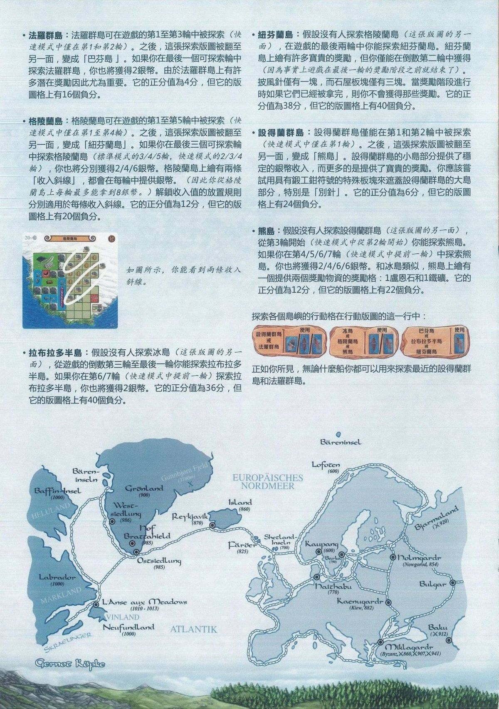